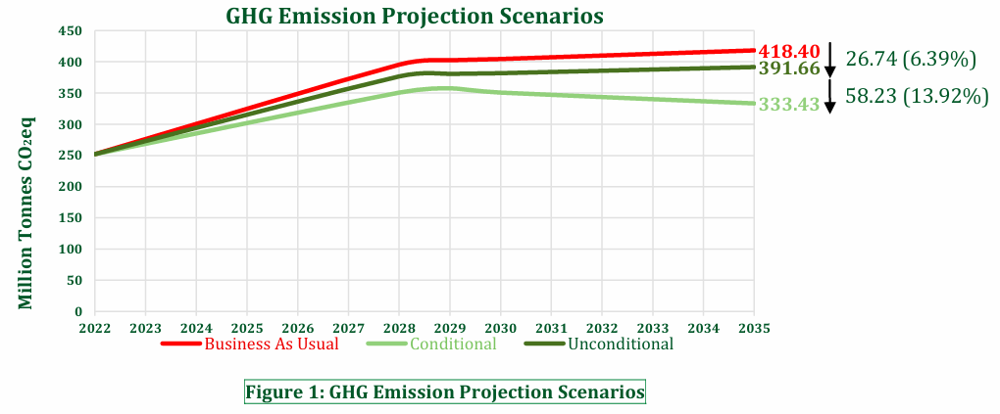
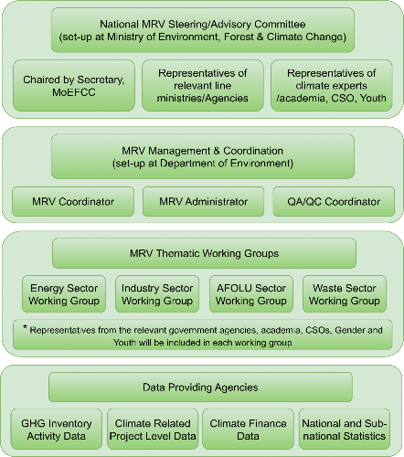

BANGLADESH’S THIRD NATIONALLY DETERMINED CONTRIBUTION (NDC 3.0)
Ministry of Environment, Forest and Climate Change
Government of the People’s Republic of Bangladesh
September 2025
Bangladesh proposes its NDC 3.0 as a global commitment to the Paris Agreement as well as a national plan for low-carbon, climate-resilient development.
Base Year Scenario 2022: In 2022, total emissions were 252.04 million tonnes of CO₂ equivalent (MtCO₂eq). Energy was the largest source (123.01 MtCO2eq, 48.81%), mainly from power generation, transport, industry, households, and fugitive emissions. AFOLU followed (95.35 Mt, 37.83%), dominated by livestock and rice cultivation. Waste contributed 26.95 Mt (10.69%), while IPPU accounted for 6.73 Mt (2.67%).
Business-as-Usual (BAU) 2035: Emissions are projected to rise sharply to 418.40 MtCO₂eq by 2035 under BAU, driven by population growth, urbanization, industrial expansion, and rising energy demand.
Mitigation Targets 2035: In the unconditional scenarios, Bangladesh will achieve a reduction of 26.74 MtCO₂eq, representing a 6.39% decrease from the business-as-usual (BAU) projections for 2035; whereas in the Conditional Scenarios, Bangladesh will achieve a decrease of 58.23 MtCO₂eq (13.92%) by 2035 compared to the Business As Usual (BAU) baseline.
Energy Sector: By 2035, mitigation in energy will deliver 69.84 MtCO₂eq reduction. Measures include renewable expansion (solar, wind, biogas), cutting transmission losses, phasing out liquid-fuel peaking plants, electrifying 348 km of rail, shifting to MRT/BRT, promoting EVs, and improving industrial efficiency. Solar irrigation, rooftop solar, clean cooking, efficient appliances, and carbon trading for fugitive emission reductions round out the package.
IPPU Sector: A reduction of 0.64 MtCO₂eq is targeted. Key actions include CCUS technology in new fertilizer plants and the phasedown of ozone-depleting substances by 10% below Bangladesh’s target under the Kigali Amendment.
AFOLU Sector: By 2035, mitigation in the AFOLU will achieve a 12.71 MtCO₂eq reduction. Priority actions include Alternate Wetting and Drying (AWD) in irrigated rice, adoption of short-duration varieties, precision fertilizer use, livestock feed improvement, and advanced manure management, including biogas, compost, and biochar. Forestry actions prioritize reforestation, coastal afforestation, and conservation of existing forests.
Waste Sector: Mitigation in the waste sector will deliver a 1.78 MtCO₂eq reduction below BAU level. Actions include four landfill gas recovery/waste-to-energy plants, 26 integrated landfill and material recovery facilities, six sewage treatment plants, and sludge treatment systems. These improve methane management, recycling, and sanitation.
National Adaptation Priorities: Guided by the NAP (2023–2050), 65 interventions across water, disaster management, agriculture, fisheries, ecosystems, urban systems, and institutional capacity are prioritized for 2035. Examples include coastal polders, climate-smart agriculture, climate-resilient livestock, mangrove restoration, urban drainage, and gender-sensitive cyclone shelters.
Loss and Damage: Bangladesh experiences around USD 3 billion in annual climate damages (around 1% of GDP), with cyclones, floods, droughts, and heatwaves driving losses. Bangladesh demands full international support for recovery, restoration, and resilience-building across food, infrastructure, water, and biodiversity sectors.
Cross-cutting Issues: Acknowledging that climate impacts fall disproportionately on vulnerable groups, Bangladesh is adopting a human rights–based approach and incorporates Gender Equality, Disability, and Social Inclusion (GEDSI) principles on its NDC 3.0. It commits to non- discrimination, inclusivity, participation, and accountability, empowering women, children, and youth, and persons with disabilities as agents of change through strengthened and inclusive institutional platforms and participatory processes. With more than half of the country’s population under the age of 35 in the country, Bangladesh recognizes that children and youth are not only leaders of tomorrow but also critical actors today. NDC 3.0 will integrate climate education across curricula, promote green skills, and expand opportunities for decent work in mitigation activities under NDC 3.0, ensuring that the benefits of the low-carbon transition are equitably shared. Essential social sectors including education, health, nutrition, and WASH will be strengthened to withstand climate impacts while contributing to low-carbon pathways. Finally, NDC 3.0 is anchored in a just transition pathway grounded in climate justice, ensuring that the shift toward low-carbon development delivers equitable benefits, protects livelihoods, food and nutrition security, and extends social protection for vulnerable communities.
Just Transition: Bangladesh’s NDC 3.0 integrates a strong focus on Just Transition to ensure that climate action is not only environment-friendly but also socially inclusive and economically viable. The strategy prioritizes decent work, equity, and protection for vulnerable groups such as workers in carbon-intensive sectors, women, youth, and informal laborers. Transition pathways cover key sectors—including energy, industry, transport, agriculture, forestry, land use, waste, and the circular economy—through measures like renewable energy deployment, industrial efficiency, electric mobility, climate-smart agriculture, and formalization of waste workers. Cross- cutting actions emphasize reskilling, financial support, social protection, and inclusive stakeholder engagement, underpinned by transparency, accountability, and measurable indicators. A National Just Transition Policy Framework will guide sectoral plans to align decarbonization with sustainable livelihoods and social equity.
Means of Implementation: To achieve NDC 3.0 mitigation targets, Bangladesh needs USD 116.18 billion in total of which USD 25.95 billion is for unconditional targets and USD 90.23 billion is from international climate finance support for meeting the conditional targets. Full achievement of NDC 3.0 ambition depends on scaled-up international finance, technology transfer, and capacity building to unlock higher ambition and secure a sustainable future for present and future generations. Bangladesh will mobilize resources through bilateral and multilateral partners, green bonds, concessional finance, result-based climate finance, public–private partnerships, and international carbon markets. Investment in skills development, governance, and innovation will enable a transparent and accountable MRV system to track mitigation, adaptation, and finance.
The NDC 3.0 places Bangladesh as a climate-vulnerable yet ambitious nation, aligning low-carbon development with resilience, equity, and climate justice. Despite contributing less than 0.5% of global emissions, Bangladesh is committing to ambitious climate action that far exceeds its fair share. Bangladesh calls upon the world—particularly the developed nations—to act with fairness and solidarity, ensuring that vulnerable nations are not left behind, so that together humanity secures a safer, more just, and sustainable future.
Chapter 1: National Circumstances and Imperative of Climate Actions
Geographic and Demographic Profile
Bangladesh, situated in South Asia, is home to the largest deltaic plain, the Ganges–Brahmaputra– Meghna (GBM) Delta, in the world. The country's mostly low flat floodplains make up around two- thirds of its land, which is less than five meters below sea level. This geographic setting accentuates the effects of climate change: floods, cyclones, storm surges, and salinity intrusion.
With an area of 147,570 square kilometers and a population of 172.92 million, as of July 2023 (BBS, 2024), Bangladesh is the world's eighth-most populous country. The country has a demographic profile of around 27 years' median age, along with numerous employment and skill development opportunities for reaping those economic benefits.
Socio-Economic Context
Bangladesh has seen substantial economic growth over the last decade or two with consistent yearly GDP growth of 6–7%. The country is projected to graduate from the category of Least Developed Countries (LDCs) by 2026. Major industries are agriculture, especially cotton and fruit, construction, textiles, and apparel. Despite over 45% of the population being employed in agriculture, it accounts for around 11% of the GDP, whereas industry accounts for 38% of the GDP, with only 17% employment contribution (MoF, 2024). Still, 19.2% of the population were still living below the national poverty line (BBS, 2025), and income inequalities prevail. Disruptions associated with climatic changes, such as crop loss, damage to infrastructure, and displacement, continue to present major obstacles to sustaining development gains and strengthening climate resilience. For its development trajectory, Bangladesh must pursue a balanced approach that addresses immediate social and economic needs while simultaneously upholding long-term environmental imperatives and must ensure a just transition that leaves no one behind.
Climate Profile and Risks
Bangladesh is one of the most vulnerable countries to the adverse impact of climate change. Extreme temperature, erratic rainfall, flood and drought, more intense tropical cyclones, sea-level rise, seasonal variation, riverbank erosion, salinity intrusion, and ocean acidification are causing severe negative impacts on the lives and livelihoods of millions of people in Bangladesh. Along with causing increasingly frequent and severe tropical cyclones, climate change is interrupting the traditional rain patterns of the country, droughts in some areas, whereas heavy rainfall in other areas of the country within a short period of time, leading to an increase in flooding and riverbank erosion, triggering an area larger than many small island countries to be washed away every year.
With around 28% of the country’s total population living in the coastal areas of the country (World Bank, 2019), sea level rise (SLR) is the biggest threat for Bangladesh among all the external drivers related to climate change. A study on the projection of sea-level rise using satellite altimetry data and assessment of its sectoral impacts through developing a digital elevation model showed that the average sea-level rise in the coastal zone of Bangladesh is 3.8-5.8 mm/year over the last 30 years (DoE, 2023). The study illustrates that approximately 12.34% to 17.95% of the coastal area will be submerged due to sea-level rise by the end of this century.
Economic Vulnerability and Macroeconomic Risks of Climate Change
According to the Asia–Pacific Climate Report 2024 of the Asian Development Bank (ADB), Bangladesh faces profound macroeconomic risks from climate change, with projected GDP losses ranging from 24.5% to 77.9% by the end of the century depending on the global emission trajectory, as mentioned in the Asia–Pacific Climate Report 2024 (ADB, 2024). Under a high-end emissions scenario (SSP5-8.5), Bangladesh’s GDP could shrink by as much as 77.9% by 2100, while under a more optimistic mitigation scenario (RCP4.5) associated with approximately 2.7°C of warming, the projected loss is still 41.1%. Even under the most stringent low-emission pathway (RCP2.6), which requires immediate and substantial global reductions to keep warming well below 2°C, the country would still face a 24.5% decline in GDP.
Policy Foundations and Strategic Frameworks for Climate-Resilient Development Bangladesh has taken proactive steps to integrate climate action into its national development policies and planning process, including the Annual Development Programme (ADP), in recognition of these challenges. The Bangladesh Climate Change Strategy and Action Plan (BCCSAP, 2009) laid the foundation for integrated adaptation and mitigation planning. Subsequent frameworks, such as the National Adaptation Plan (NAP, 2023-2050), the Delta Plan 2100, the Bangladesh Climate Prosperity Plan (BCPP, 2022–2041), Renewable Energy Policy 2025, and the Bangladesh Climate Change Gender Action Plan (ccGAP, 2024), provide a comprehensive vision for building climate-resilient, inclusive, and low-carbon development pathways.
Bangladesh's Third Nationally Determined Contribution (NDC 3.0) advances beyond its INDC (NDC 1.0, 2015) and Updated NDC (NDC 2.0, 2021) by setting more ambitious climate targets for 2035. The country has agreed to take unconditional initiatives with domestic resources and more ambitious conditional targets depending on provisions of international climate finance, technology transfer, and capacity building. This two-tiered approach reflects both the country’s determination to act within its means and the reality on the grounds that additional support is essential to unlock higher levels of ambition.
The Sustainable Development Goals (SDGs) are strongly associated with Bangladesh's NDC 3.0, especially SDG 7 on clean energy, SDG 8 on decent work and economic growth, SDG 9 on industry, innovation, and infrastructure, SDG 11 on sustainable cities, SDG 13 on climate action, SDG 15 on life on land, and SDG 17 on partnerships. Accordingly, by integrating climate action into broader development goals, the NDC shows that addressing climate change is an opportunity to enhance resilience, create green jobs, and encourage equitable growth rather than a burden.
Low GHG Emissions Profile
Bangladesh maintains low GHG emissions, substantially below the global average. Bangladesh’s contribution to total global GHG emissions is very insignificant, accounting for less than 0.5% of global emissions as of 2022 (Climate Watch Historical GHG Emissions, 2025). Per capita GHG emission of the country is 1.48 tCO2e for the year 2022 which is four times lower than the world’s per capita GHG emissions (6.36 tCO2e in 2022, according to Climate Watch Historical GHG Emissions, 2025); even much lower than the least developed countries’ (LDCs) per capita GHG emissions which is 2.2 tCO2e (UNEP Emissions Gap Report, 2024).
However, total GHG emissions in Bangladesh are rising due to industrialization, total energy consumption, and urban expansion. Bangladesh presents its NDC 3.0 as both an international commitment under the Paris Agreement and a national strategy plan for low-carbon, climate- adaptive growth. Conscious of its dual identity as a Least Developed Country (LDC) that is highly exposed to climatic risk but has historically low responsibility resulting from minimal historical emission levels.
Thus, the stark gap between what Bangladesh is responsible for as a part of the global share and per capita emissions versus its extreme vulnerability to climate risks defies the principle of climate justice and calls for global solidarity to assist its adaptation and mitigation efforts.
International Climate Justice and State Obligations
Bangladesh notes with due diligence the landmark 2025 Advisory Opinion of the International Court of Justice (ICJ), which affirmed that States have binding obligations under international law to take ambitious action to mitigate greenhouse gas emissions, to adapt to the adverse impacts of climate change, and to protect the rights of present and future generations. The ICJ recognized climate change as an existential threat and underscored that failure to act consistently with the Paris Agreement temperature goal may constitute an internationally wrongful act. Importantly, the Opinion reaffirmed that developed countries, given their historical responsibilities and capabilities, have a duty to provide adequate, predictable, and accessible climate finance, technology transfer, and capacity-building support to developing countries to enable them to meet these obligations. This strengthens the legal and moral basis of Bangladesh’s call for enhanced climate justice and reinforces the imperative for all countries, particularly major emitters, to raise their ambition in line with the 1.5°C pathway. The ICJ’s verdict is both a legal and moral compass for climate action. For climate-vulnerable countries like Bangladesh, it must be perceived as a precondition for fulfilling the pledges made in NDC 3.0.
Chapter 2: GHG Emission Reduction Target for 2035
Bangladesh submitted its initial climate change mitigation commitment, known as Intended Nationally Determined Contributions (INDC), i.e., NDC 1.0, to the United Nations Framework Convention on Climate Change (UNFCCC) in 2015. This commitment proposed a 5% Greenhouse Gas (GHG) emissions reduction which was 12 Million Tonnes CO2eq (MtCO₂eq) below Business- As-Usual (BAU) by 2030 through unconditional target, alongside an ambitious conditional target of additional 10% (24 MtCO₂eq) reduction below BAU by 2030 with the base year of 2011. In particular, the INDC initially prioritized only three sectors: Energy, Transport, and Manufacturing Industry, which had significant impact on greenhouse gas emissions during that period. Bangladesh submitted its second climate change mitigation commitment as Updated NDC (i.e., NDC 2.0) to the UNFCCC in 2021, increasing the unconditional target to a 6.73% (27.56 MtCO₂eq) reduction below BAU by 2030, and the conditional target to an additional 15.12% (61.9 MtCO₂eq) reduction below BAU by 2030. In the Updated NDC 2021, base year GHG emission scenario for 2012 was 169.05MtCO₂eq. The Updated NDC 2021 specifically encompassed additional sectors, including Energy, Industrial Processes and Product Use (IPPU), Agriculture, Forestry, and Other Land Use (AFOLU), and Waste.
For NDC 3.0, year 2022 was considered as the base year in line with the latest available data from the BTR1/NC4 GHG Inventory reporting process. The total GHG emissions from all sectors, such as Energy, IPPU, AFOLU, and Waste are about 252.04 MtCO₂eq in the base year of 2022. The Energy sector accounts for the majority share of total GHG emissions, around 123.01 MtCO₂eq (48.81% of the total share), mostly due to the combustion of fossil fuels in electricity generation, transportation, industrial energy consumption, fugitive emissions, and additional sources. Among the subsectors of the energy sector, electricity generation is the leading contributor to GHG emissions in 2022, followed by industrial energy consumption, transportation, and other sectors.
The second-highest contributing sector to GHG emissions in 2022 is AFOLU, emitting 95.35 MtCO₂eq, which is 37.83% of the total GHG emissions. The AFOLU Sector includes enteric fermentation and manure management from the livestock subsector, rice cultivation, fertilizer application, aquaculture from aggregated sources, and the forest land subsector. Within the AFOLU subsectors, livestock accounts for the largest proportion of GHG emissions in 2022, followed by agricultural and forestry/land use changes.
The Waste is the third largest emitter sector to GHG emissions in 2022, accounting for 26.95 MtCO₂eq (10.69%), comprising solid waste, biological treatment of solid waste, incineration and open burning, and wastewater treatment.
The IPPU sector contributed the least to GHG emissions in 2022, estimated at 6.73 MtCO₂eq (only 2.67% of the total emissions). Emissions from the IPPU sector generally originate from the production processes of ammonia, cement, glass, iron and steel, lubricant, and ozone-depleting substances.
Consequently, this GHG emission profile indicates that the Energy and AFOLU sectors contribute 48.81% and 37.83% respectively of total GHG emissions in 2022, underscoring the necessity of prioritizing mitigation efforts in these sectors.
Table 1: GHG Emission Scenario of Base Year 2022
|
Sector |
Sub Sector |
Base Year 2022 |
|
Emission (MtCO₂eq) |
% of Grand Total |
||
|
Energy |
Power |
42.53 |
16.87 |
Transport |
18.74 |
7.44 |
|
Energy Usage in Manufacturing Industry |
23.83 |
9.45 |
|
Construction (Brick kilns) |
7.51 |
2.98 |
|
Households |
14.10 |
5.59 |
|
Commercial |
1.74 |
0.69 |
|
Energy Usage in Agriculture |
4.56 |
1.81 |
|
Fugitive |
10.00 |
3.97 |
|
Energy Total |
123.01 |
48.81 |
|
IPPU |
- |
6.73 |
2.67 |
|
AFOLU |
Agriculture |
42.94 |
17.04 |
Livestock |
46.29 |
18.37 |
|
Forestry and Other Land Use |
6.12 |
2.43 |
|
AFOLU Total |
95.35 |
37.83 |
|
Waste |
Solid Waste and Wastewater |
26.95 |
10.69 |
Non-Energy Total |
129.03 |
51.19 |
|
Grand Total |
252.04 |
100.00 |
|
Bangladesh's GHG emissions for 2035 are projected to rise significantly due to growing energy demand, sustained economic growth along with ongoing industrialization, urbanization, and population increase. This Business As Usual (BAU) scenario is developed based on a series of sector-specific assumptions that consider current policies, past trends, and expected growth paths in the economy.
The BAU scenario in the energy sector has been developed using information from the Renewable Energy Policy 2025, the National Rooftop Solar Program 2025, Energy Efficiency and Conservation Master Plan 2030, important feedback from stakeholder consultations, and the Integrated Energy and Power Master Plan (IEPMP) 2023. The transport sector's BAU scenario is based on trends from previous increases in vehicle use, changes in modes of transportation, and fuel consumption. It also considers the Electric Vehicle Registration and Operation Policy of 2023. In brick industry scenarios created from the Brick Manufacturing and Brick Kiln Establishment Control Act, 2013 (Amendment 2019), and subsequent policy directives promoting non-fired bricks/blocks in public buildings. The refrigerant BAU scenario is in line with the goals of the Montreal Protocol for ozone-depleting substances. In the AFOLU sector, the BAU scenario is developed based on projections of rice cultivation area and livestock population for 2035 from pertinent authorities, while forestry-related emissions are sourced from the Bangladesh Forest Department. In the Waste sector, BAU scenarios are projected by extrapolating current waste generation trends, employing urban population forecasts, and waste generation rates recorded in the Municipality Solid Waste Management Survey 2022 by the Bangladesh Bureau of Statistics (BBS) and the Waste Database 2021 by Waste Concern.
In the BAU 2035 scenario, Bangladesh’s total greenhouse gas emissions are projected to reach 418.40 MtCO₂eq. The Energy sector remains the dominant source, contributing 264.00 MtCO₂eq (63.10%), largely driven by manufacturing industries (26.01%), power generation (14.74%), and brick kilns (6.12%). The AFOLU sector accounts for 110.89 MtCO₂eq (26.50%), with livestock (12.80%) and agriculture (9.25%) as the major contributors. The Waste sector adds 35.21 MtCO₂eq (8.42%), while Industrial Processes and Product Use (IPPU) contribute a smaller share of 8.30 MtCO₂eq (1.98%).
Table 2: GHG Emission Scenario of Business As Usual 2035
Sector |
Sub Sector |
BAU 2035 |
|
Emission (MtCO₂eq) |
% of Grand Total |
||
|
Energy |
Power |
61.66 |
14.74 |
Transport |
30.00 |
7.17 |
|
Energy Usage in Manufacturing Industry |
108.82 |
26.01 |
|
Construction (Brick kilns) |
25.59 |
6.12 |
|
Households |
18.87 |
4.51 |
|
Commercial |
0.83 |
0.20 |
|
|
Energy Usage in Agriculture |
8.43 |
2.01 |
|
Fugitive |
9.80 |
2.34 |
|
Energy Total |
264.00 |
63.10 |
|
IPPU |
- |
8.30 |
1.98 |
|
AFOLU |
Agriculture |
38.69 |
9.25 |
Livestock |
53.57 |
12.80 |
|
Forestry and Other Land Use |
18.63 |
4.45 |
|
AFOLU Total |
110.89 |
26.50 |
|
Waste |
Solid Waste and Wastewater |
35.21 |
8.42 |
Non-Energy Total |
154.40 |
36.90 |
|
Grand Total |
418.40 |
100.00 |
|
The Unconditional Scenario demonstrates Bangladesh's greenhouse gas mitigation commitments utilizing internal resources, policies, and capabilities without external assistance. The Conditional Scenario is formulated based on adequate international cooperation in funding, technology transfer, and capacity building. These scenarios are prepared by incorporating crucial inputs from sector-specific expert consultations with key ministries, agencies, departments, civil society, academics, and technical experts. Additionally, these scenarios illustrate Bangladesh's enhanced ambition for 2035 to reduce GHG emissions in alignment with the global temperature goals by effectively implementing mitigation measures throughout the Energy, IPPU, AFOLU, and Waste sectors. NDC 3.0 consists of the following economy-wide emissions reduction targets -
Total Emissions Reduction Target: Bangladesh will reduce total 84.97 MtCO2eq reduction (20.31%) from the BAU level by 2035.
Unconditional Target: In the unconditional Scenarios, Bangladesh will reduce 26.74 MtCO₂eq reduction (6.39%) by 2035 from the BAU level.
Conditional Target: In the Conditional Scenarios, Bangladesh will reduce 58.23 MtCO₂eq (13.92%) by 2035 from the BAU level, subject to receiving international support – grant, concessional loan, and carbon trading/carbon financing.
Table 3: GHG Emissions Mitigation Targets for 2035
|
Sector |
Sub Sector |
BAU 2035 |
Unconditional Targets 2035 |
Conditional Targets 2035 |
Total Emissions Reduction |
|||
Emission (MtCO₂eq) |
Reduction in MtCO₂eq |
% |
Reduction in MtCO₂eq |
% |
MtCO₂eq |
% |
||
|
Energy |
Power |
61.66 |
6.16 |
9.99 |
11.48 |
18.61 |
17.64 |
28.60 |
Transport |
30.00 |
2.32 |
7.74 |
4.21 |
14.03 |
6.53 |
21.77 |
|
|
Energy Usage in Manufacturing Industry |
108.82 |
10.03 |
9.22 |
17.17 |
15.78 |
27.20 |
25.00 |
|
|
Construction (Brick kilns) |
25.59 |
2.56 |
9.99 |
4.30 |
16.79 |
6.85 |
26.78 |
|
Households |
18.87 |
1.14 |
6.04 |
2.21 |
11.71 |
3.35 |
17.76 |
|
Commercial |
0.83 |
0.04 |
4.48 |
0.08 |
9.94 |
0.12 |
14.42 |
|
Energy Usage in Agriculture |
8.43 |
0.66 |
7.81 |
1.55 |
18.44 |
2.21 |
26.24 |
|
Fugitive |
9.80 |
0.00 |
0.00 |
5.94 |
60.62 |
5.94 |
60.62 |
|
Energy Total |
264.00 |
22.90 |
8.67 |
46.94 |
17.78 |
69.84 |
26.46 |
|
IPPU |
- |
8.30 |
0.00 |
0.00 |
0.64 |
7.71 |
0.64 |
7.71 |
|
AFOLU |
Agriculture |
38.69 |
1.19 |
3.08 |
2.73 |
7.06 |
3.92 |
10.13 |
Livestock |
53.57 |
1.18 |
2.20 |
3.63 |
6.78 |
4.81 |
8.98 |
|
|
Forestry and Other Land Use |
18.63 |
1.47 |
7.89 |
2.51 |
13.47 |
3.98 |
21.36 |
|
AFOLU Total |
110.89 |
3.84 |
3.46 |
8.87 |
8.00 |
12.71 |
11.46 |
|
|
Waste |
Solid Waste and Wastewater |
35.21 |
0.00 |
0.00 |
1.78 |
5.06 |
1.78 |
5.06 |
Non-Energy Total |
154.40 |
3.84 |
2.49 |
11.29 |
7.31 |
15.13 |
9.80 |
|
Grand Total |
418.40 |
26.74 |
6.39 |
58.23 |
13.92 |
84.97 |
20.31 |
|
As presented in the following Figure 1, Bangladesh’s GHG emissions are projected at 418.40 MtCO₂eq under BAU 2035, reduced to 391.66 MtCO₂eq with unconditional actions, and further down to 333.43 MtCO₂eq with conditional measures, underscoring the critical role of international support, including the utilization of Article 6 mechanisms in achieving this target. It’s noteworthy that, assuming the full implementation of the NDC 2.0 and NDC 3.0 targets, Bangladesh is expected to pick its highest GHG emissions in the period of 2029-2030 and to gradually decrease thereafter.
GHG Emission Projection Scenarios

Figure 1: GHG Emission Projection Scenarios
Informed bythe outcome of the First Global Stocktake (GST1) and recognizing the need for deep, rapid and sustained reductions in GHG emissions in line with 1.5°C pathways, Bangladesh’s Third Nationally Determined Contribution (NDC 3.0) reaffirms its strong commitment to the objectives of the Paris Agreement by enhancing ambition in both mitigation and adaptation. The targets of achieving 25% of total power mix from Renewable Energy (RE) sources by 2035, enhancing energy efficiency by 19.2%, transitioning away from fossil fuels in energy systems, in a just, orderly and equitable manner, are central to Bangladesh’s contribution to the global response to climate change. The NDC 3.0 commitments are designed not only to reduce Greenhouse Gas (GHG) emissions but also to accelerate the just energy transition, promote zero- and low-emission technologies, and enhance climate resilience. Through NDC 3.0, Bangladesh provides transparent and measurable contributions to the Global Stocktake (GST) by:
Strengthening Mitigation Ambition
The targets of renewable energy, energy efficiency and modal shift contribute to reducing projected emissions in the power, transport, and industrial sectors.
These actions are aligned with global pathways to limit temperature rise to 1.5°C and demonstrate Bangladesh’s readiness to contribute to collective emission reduction goals despite being a low-emitting, climate-vulnerable country.
Advancing Adaptation and Resilience
NDC 3.0 integrates adaptation measures across agriculture, water, health, forestry, disaster management, and urban development to reduce vulnerability of communities, ecosystems, and critical infrastructure.
These actions will provide valuable input to the GST on the progress and gaps in global adaptation efforts, particularly from the perspective of a climate- vulnerable developing country.
Ensuring Equity and Just Transition
Bangladesh emphasizes a just and inclusive transition, balancing economic growth, poverty reduction, and social equity.
The NDC highlights gender equality, youth participation, and protection of marginalized groups, aligning with the GST’s assessment of fairness and equity in global climate action.
Enhancing Transparency and Accountability
Bangladesh commits to reporting progress on implementation through the Enhanced Transparency Framework (ETF), ensuring that its achievements and challenges contribute to the global pool of data informing the GST.
Lessons from Bangladesh’s innovative adaptation practices and renewable energy actions will provide evidence-based insights for other developing countries facing similar challenges.
Bangladesh emphasizes that its enhanced ambition is conditional on access to adequate international support in terms of finance, technology transfer, and capacity-building. Aligning with the GST1 Outcome, the country calls for Financial Mechanism and the development partners to play a catalytic role in ensuring scaled-up and predictable support flows to enable effective and full realization of the NDC 3.0.
Chapter 3: Mitigation Targets and Actions
Bangladesh’s mitigation strategy under NDC 3.0 is designed as an integrated, economy-wide transition. Building on the 2021 NDC update (NDC 2.0), which first expanded coverage beyond Energy to IPPU, AFOLU and Waste, this new submission raises ambition by setting deeper sectoral targets, introducing interim milestones, and aligning explicitly with the outcomes of the first Global Stocktake. The method ensures that the mitigation measures are not separate projects but a component of an integrated national approach. This holistic strategy connects energy, transport, industry, agriculture, forestry, and waste into one low-carbon development agenda, and the need to look at integrated solutions.
Bangladesh’s mitigation strategy in the energy sector is anchored in three pillars: scaling renewable power, enhancing the rate of efficiency improvements, and a just, orderly transition away from unabated fossil fuels. Based on the result of the initial Global Stocktake, NDC 3.0 realizes these pillars with the help of near-term milestones, governance, and finance channels, so that the 2035 goals can be achieved sustainably and transparently.
Renewables scale-up: Prioritize grid-integrated solar and wind with storage, distributed rooftop programs, and thoughtful land siting (e.g., railway-adjacent corridors), supported by streamlined permitting and bankable PPAs.
Efficiency first: Accelerate loss reduction, industrial process efficiency, and building performance, linked to enforceable audits and green credit lines.
Transitioning away from unabated fossil fuels: Replace liquid-fuel peaker plants with battery energy storage paired with renewable energy like solar and flexibility resources, such as lithium-ion batteries and demand programs, and avoid lock-ins by limiting lifetime extensions of unabated capacity to security of supply needs, with a clear replacement plan. 2030 milestones, a crucial strategy to de-risk the 2035 targets, will be instrumental in our energy planning.
To avoid a 2035 “cliff edge,” Bangladesh will try to publish 2030 waypoints across energy measures, guiding annual investment and MRV: indicative RE share and capacity additions; transmission/distribution loss thresholds; storage and flexibility additions for fossil fuel-based peaking powerplant replacement; and verified end-use efficiency savings. Setting interim waypoints mirrors approaches now common in peer NDC 3.0s and aligns with GST expectations for progression and accountability.
In the Energy sector, Bangladesh’s NDC 3.0 outlines mitigation actions that together will reduce 69.84 MtCO₂eq emissions by 2035. In the Power sub-sector, key measures include expanding renewable energy generation within the electricity mix through solar, wind, biogas, and storage solutions, alongside reducing transmission and distribution losses and replacing liquid fuel– based peaking plants with cleaner alternatives. In the transport sub-sector, mitigation will be achieved through modal shifts to MRT/BRT systems, promotion of electric vehicles, electrification and efficiency improvements in rail, and deployment of solar-powered railway infrastructure. Reduction in energy usage in the manufacturing industries and construction sub- sectors will be achieved through cleaner brick technologies, improved industrial energy efficiency, and rooftop solar systems in industrial buildings. In terms of energy usage in commercial, institutional, and residential sub-sectors, the focus is on energy-efficient appliances, clean cooking systems, rooftop solar expansion in public, commercial, and social infrastructure, and renewable energy integration in hospitality and tourism. Furthermore, for energy usage in agriculture and allied activities, solar irrigation pumps will enhance renewable energy penetration. Finally, in fugitive emissions, significant reductions will be pursued through gas leakage control supported by international carbon trading under Article 6 mechanisms. Together, these sub-sectoral actions form a comprehensive package to decarbonize the energy sector while advancing energy security and climate.
Table 4:Mitigation Actions in Energy Sector
Sector |
Sub-Sector |
Priority Actions |
Actions by 2035 |
|
Unconditional |
Conditional |
|||
|
Energy |
Energy Industries - Electricity Generation |
Expansion of renewable energy in the electricity mix (MW) |
Renewable energy will share 25% of the total electricity demand by 2035. 40% of this target will be unconditional. Renewable Energy:
|
Renewable energy will share 25% of the total electricity demand by 2035. 60% of this target will be conditional. Renewable Energy:
|
Reduced Electricity Transmission and Distribution Loss |
Reduced transmission loss to 2.98% and distribution loss to 6.5% |
Reduced transmission loss to 2.95% and distribution loss to 6% |
||
|
Replace liquid fuel–based peaking capacity powerplant with cleaner alternative, including battery storage |
Replace 95% of liquid fuel–based peaking capacity power plants with cleaner alternatives, including battery energy storage systems. 30% of this target will be unconditional. |
Replace 95% of liquid fuel–based peaking capacity power plants with cleaner alternatives, including battery energy storage systems. 70% of this target will be conditional. |
||
|
Transport - Road Transportation |
Modal shift to MRT/BRT |
Construction of following MRT lines in Dhaka city:
|
||
Construction of BRTs in major cities |
||||
|
Electric vehicle penetration in the public vehicle fleet |
30% of passenger cars will be EVs |
25% of buses in the Dhaka city area will be EVs |
||
|
Transport - Rail Transportation |
Improvement of fuel efficiency and electrification |
Implement solar- equipped railway stations and install solar energy plants on at least 30% of railway-owned vacant land. 20% of this target will be unconditional. This target will complement the RE total unconditional target. |
Implement solar- equipped railway stations and install solar energy plants on at least 30% of railway-owned vacant land. 80% of this target will be conditional. This target will complement the RE total conditional target. |
|
Electrification of 348 km railway route, 20% of this target will be unconditional. |
Electrification of 348 km railway route, 80% of this target will be conditional. |
|||
|
Purchase of modern rolling stock Introduction of color light signaling system |
||||
|
Manufacturing Industries and Construction |
Improvement of technology use in brick |
40% of the total demand for bricks will be met by non-fired bricks/concrete blocks replacing burnt clay bricks. 25% of this target will be unconditional. |
40% of the total demand for bricks will be met by non-fired bricks/concrete blocks replacing burnt clay bricks. 75% of this target will be conditional. |
|
|
Energy Efficiency in Industry |
Achieve 10% Energy efficiency in the industry. 40% of this target will be unconditional. Promote rooftop solar systems in industrial buildings, 30% will be unconditional. This target will complement the RE total unconditional target. |
Achieve 10% Energy efficiency in the industry. 60% of this target will be conditional. Promote rooftop solar systems in industrial buildings, 70% will be conditional. This target will complement the RE total conditional target. |
||
|
Other Sectors - Commercial/ Institutional and Residential |
Enhanced use of energy efficient appliances in household and commercial buildings |
Use energy- efficient appliances in household, institutional, and commercial buildings to achieve 10% energy savings (energy-efficient lighting, fan, television, oven, washing machine, refrigeration, cooling systems, geyser, water purification). 50% of this target will be unconditional. Install rooftop solar systems in 50% of existing government buildings, institutions, schools, and hospitals, and 100% of new government buildings, institutions, schools, and hospitals. 30% of this target will be unconditional. This target will complement the RE total unconditional target. |
Use energy- efficient appliances in household, institutional, and commercial buildings to achieve 10% energy savings (energy-efficient lighting, fan, television, oven, washing machine, refrigeration, cooling systems, geyser, water purification). 50% of this target will be conditional. Install rooftop solar systems in 50% of existing government buildings, institutions, schools, and hospitals, and 100% of new government buildings, institutions, schools, and hospitals. 70% of this target will be conditional. This target will complement the RE total conditional target. Promote modern cooking systems
|
|
|
Other Sectors -Agriculture/ Forestry/Fish Farms |
Enhanced use of solar energy in Agriculture |
Implementation of 45,000 Nos. Solar irrigation pumps (generating 1000 MWp). 10% of this target will be unconditional. This target will complement the RE total targets. |
Implementation of 45,000 Nos. Solar irrigation pumps (generating 1000 MWp). 90% of this target will be conditional. This target will complement the RE total targets. |
|
|
Fugitive Emission |
Gas leakage reduction |
70% emission reduction from Gas leakage through international carbon trading, including Article 6 market and non- market mechanisms. |
||
In the IPPU sector, Bangladesh targets a reduction of 0.64 MtCO₂eq emissions by 2035 through the adoption of CCUS technology in ammonia fertilizer production and the phasedown of ozone- depleting substances in line with international commitments.
Table 5: Mitigation Actions in IPPU Sector
Sector |
Sub-Sector |
Priority Actions |
Actions by 2035 |
|
Unconditional |
Conditional |
|||
|
IPPU |
Chemical Industry Ammonia Production |
CCUS technology |
Implement CCUS technology in new ammonia fertilizer production plant |
|
|
HFC |
HFC Phase-down as per the Kigali Amendment to the Montreal Protocol |
Reduce HFC consumption by 10% below Bangladesh Target under the Kigali Amendment. |
||
In the AFOLU sector, Bangladesh’s targets a reduction of 12.71 MtCO₂eq emission by 2035 through mitigation actions encompass agriculture, livestock, and forestry sub-sectors, each contributing significantly to the country’s climate goals. In agriculture, actions include scaling up Alternate Wetting and Drying (AWD) in rice cultivation, expanding short-duration rice varieties, and promoting precision fertilizer application. For livestock, the focus is on feed management to improve animal diets and manure management through biogas, vermicompost, and biochar solutions. Within forestry, interventions emphasize large-scale reforestation, coastal afforestation in vulnerable ecosystems, and conservation initiatives to protect existing forests. Together, these integrated measures across sub-sectors aim to lower emissions while enhancing productivity, sustainability, and ecosystem resilience.
Table 6: Mitigation Actions in AFOLU Sector
Sector |
Sub-Sector |
Priority Actions |
Actions by 2035 |
|
Unconditional |
Conditional |
|||
|
AFOLU |
Rice Cultivation |
Scaling up Alternate Wetting and Drying (AWD) |
Bringing a Total of 30% of the country’s Boro rice cultivation area under AWD irrigation practice. 10% of this target will be unconditional. |
Bringing a Total of 30% of the country’s Boro rice cultivation area under AWD irrigation practice. 90% of this target will be conditional. |
|
Expand areas under short- duration rice varieties |
Implement 30% of Aman and Boro rice area under short-duration rice varieties. 40% of this target will be unconditional. |
Implement 30% of Aman and Boro rice area under short-duration rice varieties. 60% of this target will be conditional. |
||
|
Urea Application |
Precision fertilizer application |
Implement 10% of the total rice cultivation area under Push Type Prilled Urea Applicator technology to improve fertilizer use efficiency and reduce emissions. |
||
|
Livestock - Enteric Fermentation & Manure Management |
Feed Management |
Feed improvement by replacing straw/low-quality roughage with HYV fodder/silage: 0.2 million crossbred dairy cows |
Feed improvement by replacing straw/low-quality roughage with HYV fodder/silage: 1.5 million crossbred dairy cows |
|
|
Manure Management |
Improve 30% manure management of total manure:
|
Improve 30% manure management of total manure:
|
||
|
Forestry |
Reforestation |
Restore the deforested forests – 2,30,000 ha at the hill and plain land sal forest. 30% of this target will be unconditional. |
Restore the deforested forests – 2,30,000 ha at the hill and plain land sal forest. 70% of this target will be conditional. |
|
|
Coastal Afforestation |
Afforestation and reforestation in the coastal areas, islands, and degraded areas – 100,000 ha. 20% of this target will be unconditional. |
Afforestation and reforestation in the coastal areas, islands, and degraded areas – 100,000 ha. 80% of this target will be conditional. |
||
|
Conservation |
Existing forest area |
Engage community to strengthen forest conservation to reduce forest degradation and deforestation |
||
In the Waste sector, Bangladesh targets a reduction of 1.78 MtCO₂eq emissions by 2035. The Waste sector will implement a mix of solid waste and wastewater management measures to curb emissions while simultaneously enhancing environmental services and public health outcomes. In the municipal solid waste sub-sector, key actions include establishing waste-to-energy plants or landfill gas recovery systems, along with the development of material recovery facilities to promote resource efficiency and recycling and composting. For the wastewater sub-sector, priorities focus on the establishment of sewage treatment plants and sludge treatment facilities to reduce emissions. These interventions will contribute to lowering emissions from the waste sector while fostering sustainable waste and sanitation systems.
Table 7: Mitigation Action in Waste Sector
Sector |
Sub-Sector |
Priority Actions |
Actions by 2035 |
|
Unconditional |
Conditional |
|||
|
Waste |
Solid Waste |
Establishment of Waste to Energy Plant / Landfill gas recovery system |
Establishment of 04 Landfill gas recovery system and/or Waste to Energy plant |
|
|
Establishment of Material Recovery Facility (MRF) |
Establishment of 26 Integrated Landfill and Resource Recovery Facilities, including compost plants |
|||
|
Wastewater |
Establishment of Sewage Treatment Plant (STP) |
06 sewage treatment plants |
||
|
Establishment of Sludge Treatment Plant |
01 sludge treatment plant |
|||
Bangladesh will annually track a concise set of mitigation indicators such as renewable energy share and capacity, transmission and distribution losses; verified efficiency savings; EV share and chargers, MRT/BRT passenger kilometer, hectares under climate-smart agriculture, and afforestation, methane captured, and HFC consumption etc. These indicators align seamlessly with the Enhanced Transparency Framework, ensuring the credibility of our tracking process, and will be reported in successive Biennial Transparency Reports.
Chapter 4: Policy Measures for Mitigation Actions
Bangladesh, recognizing its vulnerability and the urgent need to act, has proactively established a comprehensive framework of national policies and acts to address climate change. Key instruments include the Bangladesh Delta Plan 2100, the National Adaptation Plan (NAP) 2023– 2050, the Bangladesh Climate Change Strategy and Action Plan (BCCSAP), Nationally Determined Contributions (NDCs), and many other sub-sectoral policies and guidelines, including the Renewable Energy Policy 2025, with a focus on reducing GHG emissions. Together, these provide a long-term vision for building climate resilience, adapting to impacts such as sea-level rise and extreme weather, and promoting sustainable, low-carbon development.
Crucially, all future development projects in Bangladesh are systematically aligned with the objectives and targets of the NDC and the NAP. This alignment ensures that climate action is not just a standalone initiative but is deeply embedded across national planning processes in water, agriculture, energy, industry, and ecosystems.
At the same time, Bangladesh needs to undertake substantial investments in human capital required to achieve a fair and inclusive transition. By 2030, green skills are expected to be integrated into all education systems, with a particular emphasis on Technical and Vocational Education and Training (TVET). Whether in trade courses or at the diploma level of engineering programs, curriculum reform inculcates sustainability, renewable energy, energy efficiency, and climate-smart practices, which are essential components of this effort. The government is also piloting Green School Guidelines that promote WASH, solarization, waste management, and tree- plantation, supported by monitoring systems and incentive mechanisms.
This integrated approach ensures that Bangladesh’s climate policies meet emission targets and prepare its people, institutions, and future generations to thrive in a low-carbon, climate-resilient economy.
Bangladesh will promote the rapid expansion of renewable energies, including solar, wind, and biogas, to diversify its energy mix and reduce dependence on fossil fuels. Measures will encourage efficiency gains across transmission and distribution networks, reduce system losses, and expand smart-grid solutions. The government will further promote transport electrification through MRT systems, low-cost EVs, and railway electrification. Industrial energy audits and appliance standards will be promoted, while clean cooking and improved household energy solutions will be encouraged to ensure affordable access and reduced indoor air pollution
The power sub-sector is central to Bangladesh’s emission profile, as it accounts for the majority of energy-related greenhouse gas (GHG) emissions. With the country remaining heavily dependent on imported coal, oil, and liquefied natural gas (LNG), it faces growing exposure to global fuel price volatility and foreign exchange pressures, which in turn disrupt economic activity and energy security. Recognizing these risks, Bangladesh has revised its Renewable Energy Policy to establish ambitious targets of meeting 20% of electricity demand from renewable sources by 2030 and 30% by 2040, with scope for upward revision should enabling conditions allow. However, progress remains modest: renewable penetration stands at less than 6% of installed capacity, and less than 9.7% of the maximum generation of 2025 is renewable power where as peak generation has already reached 16,794 MW in 2025 and electricity demand has been increasing at an average annual rate of 6.91% for the last ten years.
To bridge this gap, the Government has prioritized grid-connected solar power, supported by the Net Metering Guideline 2018 for rooftop solar, as well as the development of strategically located solar parks on government vacant land. In parallel, small and medium-scale solar applications are being expanded across education, health, agriculture, fisheries, and WASH facilities, ensuring uninterrupted low-carbon service delivery and advancing climate-resilient development. Looking ahead, the forthcoming Energy and Power Sector Master Plan is expected to guide a just energy transition by giving priority to renewable energy while also exploring opportunities for hydrogen and ammonia, hydroelectricity trade with neighboring countries, and the deployment of large-scale Battery Energy Storage Systems (BESS) with or without renewable generation.The choice of technologies will be informed by principles of cost-effectiveness, contribution to sustainable development, and alignment with just transition objectives
4.2.1.1 Policy Direction
Bangladesh will promote a diversified and resilient power system by rapidly scaling up renewable energy deployment, phasing down liquid fuel–based generation, and reducing transmission and distribution losses. Grid modernization, advanced storage solutions, and strengthened regional cooperation will be prioritized to ensure reliable, affordable, and low- carbon electricity supply by 2035.
Table 8: Policy Measures in Power Sector
Sub-sector |
Priority Measures |
|
Renewable Energy Expansion |
|
Grid Modernization and Efficiency |
|
|
System Flexibility |
|
|
Demand-side Management |
|
Public Institutions as Demonstrators |
|
Governance and Planning |
Institutionalize integrated resource planning with climate and resilience metrics, set utility performance standards, and strengthen MRV systems to track emission reductions. |
Industry constitutes a backbone of Bangladesh’s growing economy and is emerging as a significant and increasing source of future GHG emissions due to rapid industrialization. In particular, energy use in manufacturing industries accounts for a prominent share of national emissions, as it is driven by inefficient boilers, captive fossil fuel generation, and limited use of renewables. The country’s heavy reliance on fossil fuels, coupled with the pressures of emerging international sustainability standards and trade measures makes industrial decarbonization both a climate necessity and a competitiveness priority.
Bangladesh has begun operationalizing the Energy Efficiency and Conservation Masterplan under the leadership of SREDA. In the first phase, large, designated industries have been instructed to undertake mandatory energy audits and submit environmental management plans. These measures are expected to generate a pipeline of energy efficiency projects that can contribute directly to greenhouse gas emission reductions. At the same time, Bangladesh intends to promote advanced decarbonization technologies, including Carbon Capture, Utilization and Storage (CCUS) in urea fertilizer plants, in collaboration with the international carbon market. Given the central role of the textile and garments industries in the national economy and their exposure to increasingly stringent sustainability standards imposed by international buyers, Bangladesh recognizes the urgency of adopting conducive policy measures and establishing an enabling environment to drive their decarbonization. Such actions will help safeguard competitiveness, create low-carbon growth opportunities, and ensure resilience of the industrial sector in line with national climate and development priorities.
4.2.2.1 Policy Direction
Bangladesh will drive an industrial transition by scaling up efficiency, integrating renewables, and adopting clean technologies. Policies will focus on greening EPZs and industrial zones, enforce compliance, and support innovation in hard-to-abate sectors, ensuring global competitiveness while advancing NDC 3.0 targets.
Table 9: Policy Measures in Energy use in Manufacturing Industry
Sub-sector |
Priority Measures |
|
Energy Efficiency & Management |
|
|
Electrification of Processes |
|
Cogeneration & Waste Heat Recovery |
|
Renewable Integration |
|
|
Skills & Capacity |
|
The transport sector is a major driver of Bangladesh’s economic growth, mobility, and connectivity, but it is also a significant and rapidly growing source of greenhouse gas (GHG) emissions. Current frameworks such as the Revised Strategic Transport Plan (RSTP, 2015) for Dhaka and the National Logistics Policy (2024) emphasize multimodal integration, efficiency, and private sector participation. While these policies offer important directions, they do not yet provide a comprehensive pathway for low-carbon transformation of the sector.
With the adoption of NDC 3.0, Bangladesh places new commitments to align transport development with climate objectives. This creates an urgent need to integrate low-carbon measures across road, rail, inland waterways, and urban transit systems, supported by enabling frameworks on finance, sustainable infrastructure, technology deployment, and monitoring. By pursuing such integrated approaches, Bangladesh seeks to enhance competitiveness, improve mobility, and ensure that transport sector growth is consistent with its climate goals.
4.2.3.1 Policy Direction
Bangladesh will advance a sustainable and low-carbon transport system by promoting e-mobility, expanding mass transit and rail electrification, strengthening inland waterways, and integrating walking and cycling. Policy actions will focus on roadmaps, institutional capacity, fiscal incentives, and infrastructure investments to align transport growth with NDC 3.0 targets while improving efficiency, accessibility, affordability, and air quality.
Table 10: Policy Measures in Transport
Sub-sector |
Priority Measures |
Road Transport |
|
Rail Transport |
|
Water Transport |
|
Urban Transport |
|
Cross-cutting Measures |
o Ensure environmentally sound sustainable management of battery recycling and e-waste. |
The IPPU sector contributes comparatively a lower share of Bangladesh’s GHG emissions, mainly from fertilizer and cement production, and the use of industrial gases such as HFCs. However, it offers opportunities for transformative mitigation through cleaner processes, low-carbon technologies, and compliance with global commitments. With the Kigali Amendment and NDC 3.0, Bangladesh is focusing on phasing down high global-warming potential substances, piloting carbon capture technologies, and mainstreaming energy-efficient practices into industrial codes and standards.
4.3.1.1 Policy Direction
Bangladesh will promote innovation and cleaner technologies in fertilizer, cement, and chemical industries by advancing carbon capture solutions, phasing out ozone-depleting and high-GWP substances, and improving industrial efficiency standards. Policies will emphasize financial incentives, regulatory frameworks, and international cooperation to accelerate the deployment of low-carbon technologies, while enhancing competitiveness and ensuring compliance with global commitments.
Table 11: Policy Measures in IPPU Sector
Sub-sector |
Priority Measures |
Fertilizer (Ammonia- Urea) |
|
Cement |
|
Glass |
|
Steel |
|
Lubricants |
|
Refrigerants (HFCs/ODSs) |
|
Fertilizer (Ammonia- Urea) |
Explore the potential of the adoption of green ammonia using renewable hydrogen;
Encourage the gradual adoption of Carbon Capture, Utilization, and Storage (CCUS) in new fertilizer plants
Promote blended cements (fly ash, slag, calcined clay) to lower clinker ratio; Encourage waste heat recovery and kiln upgrades;
Encourage the facilitation of fuel substitution with biomass, waste- derived fuel, and hydrogen.
Encourage transition to electric furnaces powered by renewables;
Promote the use of recycled glass;
Explore promotion of hydrogen/biomass as fuels;
Promote waste heat recovery, insulation, and digital monitoring;
Promote shift to electric arc furnaces (EAFs) powered by renewables; Encourage adoption of hydrogen-based Direct Reduced Iron (DRI);
Encourage waste heat recovery and pilot CCUS where feasible.
Implement Kigali Amendment commitments by phasing down HFCs and ozone-depleting substances;
Encourage adoption of low-GWP alternatives in refrigeration and air- conditioning.
Explore the potential of the adoption of green ammonia using renewable hydrogen;
Encourage the gradual adoption of Carbon Capture, Utilization, and Storage (CCUS) in new fertilizer plants
The waste sector is an emerging and increasingly important source of GHG emissions in Bangladesh, primarily from methane released by unmanaged landfills and dumpsites. Over the past decade, the government has introduced a number of policies to strengthen waste governance. The National 3R Strategy (2010) set the foundation for reducing, reusing, and recycling waste to minimize generation at source. The Mandatory Jute Packaging Act (2010) directed the use of jute bags as an alternative to plastic packaging, while the Solid Waste Management Rules (2021) established guidelines for the segregation, collection, transportation, and disposal of waste, including sanitary landfills. To address e-waste streams, the Hazardous Waste (e-waste) Management Rules (2021) and the Extended Producer Responsibility (EPR) Regulations (2021, updated 2025) have introduced frameworks for the storage, recycling, and lifecycle management of plastics, electronic waste, and batteries.
Despite these advances, implementation challenges persist due to infrastructure gaps, weak enforcement capacity, and limited public awareness and participation. Pilot projects on integrated solid waste and fecal sludge management in selected municipalities have demonstrated potential to lower methane emissions, but scaling up such approaches will require substantial international support. To meet the mitigation targets under NDC 3.0, Bangladesh will need to expand sustainable waste-to-resource pathways, including composting, anaerobic digestion, refuse-derived fuel (RDF), plastics pyrolysis or gasification, and biofuel or biochar production. Special emphasis will also be placed on managing e-waste and battery disposal, which are rapidly increasing streams due to digitalization and the anticipated expansion of electric mobility.
4.4.1.1 Policy Direction
Bangladesh will strengthen waste management as a climate priority by expanding integrated municipal waste management systems, promoting waste-to-energy solutions, and advancing circular economy approaches. Policies will focus on developing sustainable markets for compost and RDF, ensuring safe e-waste and battery management, and mobilizing climate finance to scale methane reduction initiatives under NDC 3.0.
Table 12: Policy Measures in Waste Sector
Area |
Priority Measures |
National Waste-to- Energy Policy |
o Encourage to develop a framework defining technology standards, sustainability criteria, and Power Purchase Agreement norms for WtE projects. |
|
Compost and RDF Market Development |
o Promote markets through private sector engagement and linkages with agriculture and industry. |
Circular Economy Strategy |
o Promote the adoption and operationalization of the national circular economy framework to gradually strengthen recycling industries and resource recovery. |
Anaerobic Digestion |
o Promote bio-gas and bio-CNG from organic waste due to their strong sustainable development co-benefits. |
|
Battery Disposal and Recycling |
o Promote the establishment of a national framework for safe collection, recycling, and disposal of lead-acid and lithium-ion batteries, ensuring metal recovery and prevention of environmental contamination. |
E-waste Management |
o Encourage the expansion of formal e-waste recycling facilities and the enforcement of extended producer responsibility for end-of-life electronic products. |
Bangladesh’s economy, livelihoods, and future climate resilience are closely tied to agriculture and forestry, which are critical for food security, rural employment, biodiversity, and disaster protection. At the same time, the AFOLU sector contributes significantly to national GHG emissions, making it both a challenge and an opportunity under NDC 3.0.
The government has introduced several policy frameworks to support low-carbon and climate- resilient development in this sector. The National Agriculture Policy (2018) and the National Agricultural Extension Policy (NAEP) emphasize decentralized, demand-driven extension services, improved farmer-research linkages, and climate-smart agricultural practices. Complementary measures include the Brick Making and Kiln Establishment (Control) Act 2013 restricting firewood use in brick kilns and robust policies against illegal logging. These have helped slow deforestation and promote afforestation and agroforestry.
Despite these policies, rapid population growth, land degradation, deforestation, and climate stresses continue to challenge the sector. Meeting NDC 3.0 mitigation targets will require scaling up climate-smart agriculture, sustainable aquaculture, low-emission livestock systems, and strengthened forest governance aligned with REDD+ and Article 6 mechanisms to attract international finance. Besides, agroecology and floodplain aquaculture offer climate-smart, low- carbon solutions. Investment, capacity building, and international cooperation in this area can improve food security, livelihoods, and economic resilience while enhancing disaster management.
4.5.1.1 Policy Direction
Bangladesh will promote a low-carbon, climate-resilient AFOLU system that safeguards food and nutrition security, enhances rural livelihoods, and strengthens natural carbon sinks. Policy emphasis will be on scaling climate-smart agriculture and livestock practices, expanding sustainable aquaculture, and restoring forests and mangroves, while integrating modern technologies, extension services, and financing frameworks to achieve the sector’s contribution to NDC 3.0 targets.
Table 13: Policy Measures in AFOLU Sector
Sub-sectors |
Priority Measures |
|
Agriculture |
|
|
Fisheries |
|
|
Livestock |
|
|
Forestry and Land Use |
|
Chapter 5: Adaptation and Loss & Damage
Adaptation is central to Bangladesh’s response to climate change, given the country’s high vulnerability to sea-level rise, extreme weather events, salinity intrusion, river erosion, floods, and droughts. These hazards undermine agriculture, water resources, health, ecosystems, livelihoods, and infrastructure, putting sustainable development gains at risk. Building resilience and reducing risks for people, ecosystems, and the economy are national priorities. Adaptation measures enhance the capacity of vulnerable individuals, households, communities, and institutions to withstand climate shocks while ensuring long-term socio-economic security and sustainable development. Integrating adaptation into national planning and sectoral development strategies also contributes to safeguarding food and water security, protecting livelihoods, and reducing displacement risks.
Bangladesh has developed strong policy and institutional frameworks to advance climate adaptation, guided by the National Adaptation Plan (NAP) 2023-2050, the National Adaptation Programme of Action (NAPA) 2005, the Bangladesh Climate Change Strategy and Action Plan (BCCSAP) 2009, and the Bangladesh Delta Plan 2100. Among these, the National Adaptation Plan (NAP) 2023-2050 serves as the priority document for Bangladesh in the area of adaptation, providing a long-term roadmap to reduce climate risks and build resilience across sectors.The NAP identifies 113 adaptation interventions across 8 thematic sectors:
Water resources;
Disaster, social safety, and security;
Agriculture;
Fisheries, aquaculture, and livestock;
Ecosystems, wetlands, and biodiversity;
Urban areas;
Policies and institutions; and
Capacity development, research, and innovation
To ensure consistency and synchronization among the country’s policies, plans, and international commitments, NDC 3.0 draws directly from the NAP in defining its adaptation priorities. Out of the 113 interventions identified in the NAP, 65 interventions have been included in NDC 3.0 as the national adaptation priorities. These priorities reflect the short- to medium-duration interventions identified in the NAP and are considered implementable by 2035, aligning with the timeframe of this NDC 3.0.
Table 14: National Adaptation Priorities for NDC 3.0 aligned with NAP sectors
Sector |
Interventions for NAP sectors |
|
Water resources |
Integrated management of coastal polders, sea dikes and cyclone shelters against tropical cyclone, sea-level rise and storm surges |
|
Management of freshwater resources and monitoring of salinity for reducing vulnerabilities in existing and potential salinity-prone areas |
|
|
Strengthen early warning and dissemination services for climate change-induced slow-onset and sudden extreme water hazards using ICT and AI |
|
|
Community-based rainwater harvesting through indigenous techniques and conservation of wetlands, reservoirs and natural springs for drinking water supplies in hard-to-reach and water- stressed areas |
|
|
Dredging of all major and medium rivers for accommodating the smooth drainage of excess floods during climate-induced extreme events |
|
|
Drainage management of economic/industrial zones and critical infrastructure, and reinforced climate resilience through risk assessment |
|
Protection against flash floods, wave action, erosion and sedimentation |
|
|
Erosion risk management through erosion prediction, improved early warning and its dissemination |
|
|
Drought management measures for enhanced groundwater recharge and increased soil moisture in water-stressed areas |
|
Development of a national drought monitoring system |
|
Transboundary river basin management and basin-level cooperation |
|
|
Development of a basin-wide and participatory watershed management framework to restore, harvest and optimize the use of water resources |
|
|
Disaster, social safety and security |
Construction and rehabilitation of gender-, age- and disability- sensitive, multipurpose, climate-resilient, and accessible cyclone and flood shelters with safe drinking water, sanitation and livestock shelter facilities |
|
Implementation of thunderstorm and lightning risk management measures in highly susceptible areas |
|
|
Protection and enhanced resilience of climate migrants with a particular focus on gender and disability |
|
|
Increase the resilience of vulnerable poor communities by introducing gender-, age- and disability-responsive diversified livelihoods, effective insurance mechanisms and climate resilience funds |
|
|
Behavioral change and development of awareness among vulnerable communities for emergency responses and livelihood protection due to climate-induced disasters |
|
|
Halt child abuse, early marriage and domestic violence triggered by climate-induced disasters |
|
|
Introduction of risk transfer and insurance mechanisms for protection of critical and disaster protection infrastructure, vulnerable MSMEs and farmers |
|
|
Building climate-resilient houses and education & communication infrastructure in areas with high climate risk |
|
|
Agriculture |
Extension of climate-smart technologies for increasing irrigation water use efficiency |
Augmentation of surface water for irrigation and multipurpose use |
|
Extension of stress-tolerant, pest- and disease-resistant rice and non- rice crops |
|
|
Strengthening and development of impact-based early warning systems and data management for agriculture |
|
|
Development of agrofood processing industries based on climate- sensitive crop zoning |
|
|
Fisheries, aquaculture and livestock |
Extension of climate-resilient technology for combating climate-related stresses in aquaculture |
|
Monitoring, evaluation and enforcement to ensure the conservation of fish biodiversity and habitat |
|
Development of shrimp culture planning and zoning |
|
Development of fish industries based on climate-sensitive crop zones |
|
|
Extension of climate-stress-tolerant livestock and poultry breeds, farms, feed and fodder |
|
|
Climate-resilient infrastructure development for the safety of livestock and poultry during disasters |
|
|
Ecosystems, wetlands and biodiversity |
Extension and expansion of the coastal greenbelt for protecting coastal habitats, including the Sundarbans, mangroves, salt marshes, etc. |
|
Expand ecosystem-based adaptation for the restoration of mangroves, hill areas and wetlands to tackle the adverse impacts of climate change |
|
|
Strengthening ecosystem and biodiversity monitoring and law enforcement systems |
|
Combat desertification through planting regenerative indigenous species |
|
Halda River ecosystem restoration and conservation |
|
|
Watershed management of Kaptai Lake for ecosystem resilience and water retention |
|
|
Develop and update ocean ecosystem management policies, guidelines and institutional capacities for management of the blue economy |
|
|
Restoration of the coral reef ecosystem and associated fish and benthic communities in the St. Martin Islands |
|
|
Development of a national management system for wetlands, biodiversity, oceans and coastal information for supporting monitoring and surveillance |
|
|
Urban areas |
Improvement of natural and artificial stormwater drainage networks for reducing vulnerabilities to urban flooding and drainage congestion |
|
Expansion and conservation of green and blue infrastructure for improvement of urban environments and drainage systems |
|
|
Development of city climate action plans for major urban and peri- urban areas emphasizing the resilience of urban-poor communities and climate migrants |
|
|
Expand innovative climate-resilient, gender-, age- and disability- sensitive WASH technologies and facilities for urban communities |
|
|
Increase access to water supply, sanitation and hygiene services in cities for reducing exposure to flooding and waterborne diseases during or after extreme weather events |
|
Establishment of climate-resilient health-care facilities in urban areas |
|
|
Development of heatwave and disease outbreak advisory services for city dwellers |
|
|
Policies and institutions |
Preparation of a roadmap for implementing the NAP |
Development of a regulatory and institutional framework for advancing the NAP |
|
Update and reform policies and plans for mainstreaming CCA |
|
|
Operationalize the NAP monitoring, evaluation and learning framework based on a theory of change |
|
|
Reform local government institutes towards the inclusion of community-based organizations, women, people with disabilities and youth in the implementation of locally led adaptation |
|
Innovative, appropriate and enhanced financial instruments for supporting CCA |
|
Private sector finance in leading CCA implementation |
|
|
Capacity development, research and innovation |
Transformative capacity development and knowledge management for integrating CCA into planning processes and climate financing |
|
Awareness-raising and training on skills for enhanced adaptive capacities and improved diversified livelihoods at the community level |
|
|
Capacity development for the implementation of nature-based solutions and locally led adaptation |
|
|
Generation of national, regional and local-level evidence and scenario- based climate information through climate downscaling and publication of a national climate outlook, risk and vulnerability atlas |
|
Action research and field demonstrations on climate-smart agriculture |
Sector |
Interventions for NAP sectors |
Research and innovation related to climate-resilient fisheries and aquaculture |
|
Research and innovation related to climate-smart livestock and poultry |
|
Action research for locally led and indigenous climate change adaptation |
|
Research and popularize climate-stress-tolerant plant species |
|
|
Research on and piloting of climate-resilient infrastructure, improved health measures and WASH technologies |
|
|
Action research for low-impact development techniques, green infrastructure and integrated drainage management for smart city development |
Through the implementation of these adaptation priorities, Bangladesh seeks to accelerate adaptation measures, safeguard its most vulnerable populations, and strengthen ecosystem and institutional resilience against the adverse impacts of climate change, while advancing the nation’s long-term sustainable development vision.
Bangladesh’s adaptation financing needs will continue to grow. Based on NAP and sectoral estimates, by 2035 the annual adaptation investment requirement will reach USD 12–14 billion. While domestic resources will provide a portion, international support remains essential. Bangladesh calls for:
Enhanced access to the Green Climate Fund (GCF) and Adaptation Fund.
Fulfillment of the Paris Agreement commitment to scale up adaptation finance to be at par with mitigation.
Expanded opportunities for technology transfer, South-South cooperation, and capacity building.
Bangladesh is committed to a climate-resilient development pathway that safeguards people, ecosystems, and infrastructure, while ensuring equitable and inclusive growth. Through its NDC 3.0, with a target year of 2035, Bangladesh reaffirms its leadership in adaptation and calls for enhanced international solidarity, finance, and technology transfer to transform vulnerability into resilience and prosperity.
Loss and damage in the Bangladesh context is a complex issue encompassing both tangible economic devastation and intangible, irreversible non-economic losses. It highlights the profound injustice of climate change, where the poorest and most vulnerable people bear the greatest burden for a problem they did not create. Recent Advisory Opinion delivered by the International Court of Justice (ICJ) clarified clearly at paragraphs 415, 417 and 418 that the Paris Agreement 2015 obliges States to work towards averting, minimizing, and addressing loss and damage (Article 8) and at paragraphs 264, 267 and 270 that responsible States shall provide (Article 9) financial and technical and capacity building supports to address the loss and damage associated with climate change impacts. It is worth noting that, this Advisory Opinion of the ICJ further clarified at paragraph 315 that even a State is not a Party to Paris Agreement, still responsible for climate change impacts include for addressing loss and damage (ICJ, 2025) Bangladesh as one of the most vulnerable countries to climate impacts, is committed to deal with loss and damage to protect the fundamental human rights of the people of Bangladesh.
It is the responsibility of the historically polluting countries to protect the rights of the people and to address loss and damage issues, particularly for vulnerable countries like Bangladesh. Bangladesh contributes less than 0.50% to global GHG emissions, yet it is one of the most vulnerable countries in the world. In the last two decades (2000-2019), Bangladesh experienced 185 extreme weather events (OHCHR, 2023). The average annual loss due to climate change impacts in Bangladesh is estimated at around 1-2% of GDP (World Bank, 2022), although this figure can be significantly higher in individual years. Worth mentioning, the size of Bangladesh’s GDP in 2023-2024 was about 450 billion USD (BBS, 2025).
Averting, minimizing and addressing loss and damage associated with the adverse effects of climate change, including extreme weather events and slow onset events is a critical frontier of climate justice and hence is a core component of Bangladesh's NDC 3.0. Bangladesh commits to the following actions to address loss and damage with 100% conditionality with support from the polluter countries. It outlines the strategy to address the impacts of climate change that exceed the country’s adaptive capacity. The following outlines Bangladesh's commitments to tackle this challenge, which are contingent upon the provision of adequate, predictable, and accessible grant-based finance from the international community, including the Fund for Responding to Loss and Damage (FRLD).
Table 15: Proposed Activities in Loss and Damage
Strategic Pillars |
Key Activities for Bangladesh |
Timeframe |
|
Comprehensive Need Assessment |
|
Short Term |
|
Undressing the nature of loss and damage and required approaches |
|
Short Term |
|
Developing national plans, policies, institutions and legal frameworks |
|
Short Term |
|
Developing National Financial and Technical Architectures |
|
Mid Term |
|
Addressing Non- Economic Losses (NELs) |
|
Short and Mid Term |
|
Anticipatory Action & Early Warning |
|
Short Term |
|
Human Mobility & Planned Relocation |
|
Short, Mid and Long Terms |
|
Rehabilitation & Recovery (Build Back Better) |
|
Ongoing & Post- Event |
|
Developing Programs for Slow onset Processes |
|
Short, Mid and Long Terms |
Bangladesh will continue to push the Executive Committee of the Warsaw International Mechanism on Loss and Damage, the Santiago Network on Loss and Damage and Fund for Responding to Loss and Damage (FRLD) and other relevant funding entities for accessing required financial and technical assistance to address loss and damage in Bangladesh. Bangladesh will also collaborate with other vulnerable developing countries to mobilize the required financial resources to address loss and damage through constructive multilateral processes and other legal pathways. It is noted by one estimate that the projected economic cost for addressing loss and damage by 2030 alone is USD 400 billion a year, and by 2050, is projected to be between USD 1 to 1.8 trillion. Bangladesh will be associated with other vulnerable countries for mobilizing the required financial, technical, and capacity-building support for addressing loss and damage nationally and regionally.
Chapter 6: Cross-Cutting Issues
The impacts of climate change are so multidimensional that they cannot be reduced by only taking specified sector-specific actions. Therefore, cross-cutting issues such as gender equality, human rights, youth participation, intergenerational equity, education, health, food security, and inclusive infrastructure are playing a vital role in making climate actions viable, effective, and sustainable. In this context, Bangladesh seeks to enhance social justice, strengthen resilience, and create broader co-benefits for development. This inclusive approach ensures that mitigation and adaptation actions deliver not only environmental outcomes but also contribute to inclusive social and economic dividends, and intergenerational equity by mainstreaming these dimensions in NDC 3.0.
Bangladesh acknowledges that the impacts of climate change are not experienced equally but fall disproportionately on women, children, youth, persons with disabilities, and other vulnerable groups. Mainstreaming GEDSI into NDC 3.0 is critical for guaranteeing that climate actions are inclusive, equitable, and effective. This requires clear institutional mandates, dedicated focal points, and improved coordination among ministries. In line with the Bangladesh Climate Change Gender Action Plan (ccGAP, 2024) and global commitments such as the Lima Work Programme on Gender (LWPG), Action for Climate Empowerment (ACE), and the UN Convention on the Rights of Persons with Disabilities, NDC 3.0 mainstreams GEDSI principles across all mitigation and adaptation actions. This ensures that climate action is inclusive, equitable, and just, leaving no one behind.
Establishment of dedicated GEDSI units and focal points with trained personnel, resources, and clear mandates to ensure effective coordination across ministries.
Develop capacity-building programs for climate and inclusion focal points, children and youth, and underrepresented groups to integrate inclusion in sectoral actions.
Ensure active participation of vulnerable groups in NDC implementation, with local governments promoting inclusive adaptation planning.
Mainstreaming inclusive employment, skills development, Micro, Small, and Medium Enterprises (MSMEs), and innovation led by women, persons with disabilities, and vulnerable groups.
Table 16: Priority Actions in GEDSI
Sector |
Key GEDSI Entry Points |
Proposed Actions |
Expected Outcomes |
|
Energy & IPPU |
Women and persons with disabilities ares excluded from renewable energy jobs; reliance on biomass cooking. |
- Promote women/youth entrepreneurship in solar, biogas, and clean cooking.- Provide targeted training and finance for women/PWDs in renewable and green manufacturing sectors. |
|
|
Transport |
Lack of safe, accessible, and affordable transport for women, elderly, and PWDs. |
- Ensure universal design in MRT/BRT and EV charging stations.- Introduce women- and disability-friendly public transport policies.- Promote female employment in EV and public transport sectors. |
|
|
AFOLU |
Women farmers have limited land rights; youth underrepresented in adaptation. Traditional knowledge underutilized. |
|
|
|
Waste |
Informal sector dominated by women and migrants with unsafe conditions. |
|
|
|
Urban & Infrastructure |
Vulnerable groups excluded from urban planning; infrastructure not inclusive. |
|
|
Informed by the Decision 1/CMA.5 on outcome of the First Global Stocktake (GST1), Bangladesh acknowledges that climate change is a common concern of humankind and that actions to address climate change should respect, promote and consider the respective obligations on human rights, the right to a clean, healthy and sustainable environment, the right to health, the rights of ethnic minorities, local communities, migrants, children, women, persons with disabilities and people in vulnerable situations and the right to development. In line with the UN Convention on the Rights of the Child and the GST1 outcome, Bangladesh will ensure that NDC 3.0 is child- and youth- responsive. This includes strengthening low-carbon, climate-resilient child protection systems, safeguarding children, women, persons with disabilities, and other vulnerable groups from climate-related protection risks and promoting climate justice through accessible grievance and accountability mechanisms. Therefore, Bangladesh's NDC 3.0 adopts a rights-based approach to climate action, informed by the Paris Agreement and the UNHRC Resolution 48/13 A/HRC/48/L.23/Rev.1 on the human right to a safe, clean, healthy and sustainable environment.
Significantly, mitigation and adaptation measures will uphold, safeguard, and advance human rights in accordance with national development priorities and the right to development. Furthermore, emphasis will be placed on equality, non-discrimination, participation, accountability, and access to remedies. Climate policies will protect vulnerable populations, including women, youth, persons with disabilities, and marginalized groups, by ensuring their full participation in decision-making processes and equitable access to benefits.
Consequently, Bangladesh aims to integrate human rights principles across various sectors to ensure that climate action effectively reduces emissions, enhances resilience, and promotes dignity, justice, and inclusive development for all individuals.
Bangladesh recognizes that children and youth are not only the future leaders but also critical change agents of today in driving climate action. With more than half of the country’s population under the age of 35, youth bring innovation, creativity, and strong civic commitment that are essential for achieving the targets of the Third Nationally Determined Contribution (NDC 3.0). Bangladesh therefore, seeks to ensure meaningful children and youth participation in the implementation, monitoring, and evaluation of its NDC 3.0, both at the national and local levels.
To achieve this, Bangladesh will strengthen institutional platforms and networks that enable children and youth voices to be included in climate policy dialogue and decision-making. Children and youth organizations, climate clubs, and student groups will be engaged in awareness-raising, capacity-building, and grassroots mobilization, particularly in areas such as renewable energy promotion, energy efficiency, sustainable agriculture, waste management, education, and ecosystem restoration. Partnerships will be fostered between government institutions, academia, civil society, international organizations, and private sector actors to create opportunities for children and youth to contribute directly to NDC-related initiatives.
Efforts to engage children and youth in a meaningful way led to a dedicated consultation with expert panels, youth activists, children, youth representatives, and young people across Bangladesh. The following actionable measures are proposed to systematically integrate youth and children into mitigation activities across key sectors.
Table 17: Priority Actions with Child and Youth Involvement
Sector |
Proposed Action |
Children and Youth Involvement |
Expected Outcomes |
|
Energy & Industrial Processes and Product Use (IPPU) |
Community-Based Renewable Energy Projects |
Youth-led installation & management of solar, wind, biogas systems |
Adoption of renewable energy |
Solar Irrigation Awareness Campaigns |
Children and Youth outreach to farmers promoting solar irrigation |
Adoption of solar irrigation systems. |
|
|
Innovation & Research on Energy-Efficient Technologies |
Youth hackathons, university research, startup incubation |
Energy savings, local innovation ecosystem strengthened |
|
Promoting Government Climate Commitments |
Children and Youth advocacy & campaigns for national targets |
Public support for national emission reduction targets |
|
Greening Highways |
Children and Youth-led tree plantation along transport corridors |
Carbon sequestration, improved roadside ecosystems |
|
Public Transport & Active Mobility Awareness |
Children and Youth-led campaigns for cycling, walking, public transport |
Supports mode shift targets & transport emission cuts, Reduced vehicle emissions |
|
Green Building Awareness in Industry |
Children and Youth campaigns targeting RMG & industry sectors |
Adoption of energy-efficient practices in industry |
|
|
Agriculture, Forestry, and Waste |
Source-Based Waste Segregation |
School & community-led segregation programs |
Improved household & institutional waste management |
Waste-to-Business Models |
Youth entrepreneurship in recycling, composting, up-cycling |
Circular economy, youth-led green enterprises |
|
|
Community-Based Biofertilizer & Biogas Promotion |
Youth-led awareness & installation of units |
Reduced chemical fertilizer use, renewable energy generation |
|
Community Forestry & Tree Plantation |
Children and youth-led afforestation, reforestation, urban greening |
Carbon sequestration, enhanced biodiversity |
|
Youth-Led Climate Smart Agriculture |
Youth demonstration plots, agri-clubs, peer learning |
Increased adoption of climate-smart farming practices |
|
|
Cross-Cutting (Co- Benefits & Social Sectors) |
Green Jobs Training for Youth |
Vocational training in renewable energy, waste management and climate smart agriculture. |
Expanded green workforce, livelihood opportunities |
Transport System Awareness Campaigns |
Children and youth-led public campaigns for efficient transport |
Reduce per capita transport emissions, Increased adoption of eco-friendly transport |
|
Funding Innovations in Schools & Universities |
Student-led low-carbon solutions |
Supports technology innovation & strengthened innovation culture in educational institutions |
|
Promoting Renewable Energy in Social Sectors |
Student-led RE installations in schools and health centers |
Reduced operational emissions, energy cost savings |
|
Integrating Climate Change into Education |
Children and Youth advocacy for climate curriculum |
Early climate literacy, long-term behavioral change |
Bangladesh will also invest in building children and youth capacities through education, training, and innovation support. This includes integrating climate change issues into school, college, and university curricula, providing technical and financial support for children and youth-led climate innovation projects, and creating avenues for green entrepreneurship. By empowering youth with the necessary skills and resources, Bangladesh aims to accelerate climate-smart solutions that support its low-emission and climate-resilient development pathway.
Finally, young people will be encouraged to contribute to citizen-led climate data collection, local- level adaptation planning, and community-based renewable energy initiatives. Through these efforts, Bangladesh affirms its commitment to building an inclusive and participatory climate governance system where the aspirations and leadership of children and youth play a central role in delivering on the country’s climate commitments.
In line with NDC 3.0, Bangladesh will transform its education system to be climate-resilient, inclusive, and future-oriented by integrating climate education, disaster risk reduction (DRR), and green skills across all levels of formal and non-formal education. By 2030, at least 50% of teachers and students will receive digital training on climate education and DRR, supported by the development of training modules, nationwide rollout, and monitoring through EMIS. Green jobs and skills will be integrated into school, TVET, and university curricula, aligned with labour market needs in renewable energy, sustainable agriculture, and waste management, while educator capacity and youth-led green entrepreneurship will be strengthened through internships and partnerships with green industries. Furthermore, climate resilience, adaptation, and loss and damage will be embedded into curricula from preschool to higher education to prepare students and school leaders with essential knowledge and practices for addressing climate risks. To complement these efforts, green school guidelines—including WASH, renewable energy, waste management, and tree-planting—will be implemented, supported by awareness- raising, monitoring systems, and recognition programs to reward innovation and compliance. Collectively, these measures will empower future generations with the skills and values needed for a sustainable and climate-resilient Bangladesh.
Bangladesh considers health systems to be crucial for both adaptation and mitigation. NDC 3.0 underscores the importance of strengthening the health sector’s climate resilience and low- carbon transition to safeguard public health and preserve essential services in the face of escalating climate hazards.
Key priorities include the implementation of energy-efficient and low-emission medical waste management systems, integration of climate–health modules into medical education and workforce training, and adoption of renewable energy solutions such as solar power and flood- proof designs in health facilities. Disaster preparedness and rights-based outreach initiatives will particularly target vulnerable groups, including mothers and children, ensuring health equity in times of crisis.
Additionally, NDC 3.0 aims to enhance the linkage between health, WASH, and nutrition by establishing reliable access to safe water and sanitation infrastructure, thereby reducing undernutrition caused by waterborne diseases and environmental contaminants. Strengthening these cross-sectoral linkages will ensure that public health outcomes remain central to Bangladesh’s climate action.
Table 18: Priority Actions in Health
Action Area |
Priority Actions |
|
Health System Infrastructure and Operations |
|
These measures position the health sector as a contributor to resilience and mitigation, while protecting vulnerable populations, and they align with global priorities on air quality, universal health care, and just energy transitions.
Bangladesh recognizes that sanitation, solid waste, and water services are significant sources of methane and energy-related emissions. Decarbonizing these systems not only cuts emissions but also delivers major public health benefits, especially for children and climate-vulnerable communities. Under NDC 3.0, a set of integrated WASH measures will be pursued to reduce greenhouse gas emissions while strengthening resilience.
Table 19: Priority Actions in WASH
Action Area |
Priority Actions |
|
Water Supply and Sanitation |
|
These measures will help Bangladesh cut methane and energy-related emissions while ensuring safe water, sanitation, and uninterrupted service delivery. By coupling emission reductions with improved WASH outcomes, the country aims to protect vulnerable communities, enhance resilience, and unlock opportunities for climate finance and carbon markets.
In pursuing emission reductions from rice cultivation and livestock within the agriculture sector, Bangladesh will ensure that food security and nutrition are not compromised. Rather, climate actions will be designed to promote resilient food systems, safeguard dietary diversity, and strengthen nutritional outcomes. As local production is already impacted by floods, droughts, and salinity intrusion, policies and interventions will therefore accordingly link mitigation efforts to zero hunger, better child nutrition, and stronger climate-resilient food systems. Special emphasis will be placed on nutrition-rich rice varieties and livestock management practices that contribute both to lower emissions and improved food availability.
Table 20: Priority Actions in Food and Nutrition Security
Action Area |
Priority Actions |
|
Agriculture and Food Systems |
|
|
Energy in Agriculture |
Promote solar-based irrigation and cold chain systems to improve access to safe, diverse, and nutritious foods, particularly in vulnerable rural and peri-urban communities. |
|
Forestry and Ecosystems |
|
|
Policy and Planning |
|
Community and School Nutrition |
|
By integrating food security and nutrition into mitigation and adaptation actions, Bangladesh will strengthen resilience, protect vulnerable populations, and ensure that climate action supports both emission reductions and the long-term goal of a healthy, well-nourished society.
Bangladesh’s urban policies aim for balanced and sustainable urbanization by decentralizing development, strengthening local government capacity, and improving infrastructure and services. Key frameworks include the National Urban Policy, the Local Government (City Corporation) Act 2009, planning and management laws for RAJUK, CDA, KDA, RDA, CoxDA, GDA, the Spatial Planning Ordinance, and the Municipality (Pourashava) Development Plan. These guide urban growth, economic development, and environmental management to create livable cities that ensure access to services and opportunities for all, including vulnerable groups.
Urbanization directly shapes GHG emissions, particularly through transport systems, municipal waste management, and building energy use. This recognition has prompted low-carbon initiatives and provides a foundation for aligning urban development with NDC 3.0 commitments.
Table 21: Priority Actions in Urban
Sub-sector |
Priority Actions |
Urban Planning & Governance |
Encourage integration of climate mitigation into city development plans; strengthen local government capacity for low-carbon urban planning; align zoning, building codes, and infrastructure with emission reduction goals. |
Urban Transport |
Promote to integrate MRT/BRT with city planning; expand cycling and walking networks; promote EV charging infrastructure in urban hubs. |
Waste Management |
Encourage to implement integrated solid waste and fecal sludge management at city level; promote source segregation, composting, anaerobic digestion, and WtE projects. |
Inclusive & Equitable Cities |
Promote access to safe housing, clean energy, and basic services for vulnerable groups; promote participatory urban governance. |
|
Finance & Innovation |
Encourage to mobilize climate finance for low-carbon city projects; pilot digital monitoring for emissions from buildings, transport, and waste. |
Bangladesh acknowledges the need to make its building and construction sector more climate- resilient and low-carbon. With rapid urbanization and growing demand for housing and infrastructure, the country will update codes, encourage energy efficiency, and promote sustainable materials and financing options to reduce emissions while ensuring resilient and inclusive growth.
Table 22: Priority Actions in Building Infrastructure
Action Area |
Priority Actions |
|
National Building Code (BNBC) |
Bangladesh will seek to update and gradually enforce the BNBC to better integrate climate resilience and energy efficiency provisions, encouraging compliance across public and private construction. |
Renewable and Passive Design |
The country intends to encourage solar-ready designs, rooftop solar PV, and promote passive design measures such as natural ventilation, daylighting, green roofs, and reflective surfaces. |
|
Sustainable Materials |
Bangladesh aims to promote the use of non-fired bricks, compressed stabilized earth blocks, recycled materials, and energy-efficient glass, while exploring incentives to support local low-carbon material production. |
|
Certification & Rating Systems |
|
|
Green Finance |
|
Energy Efficiency |
Building energy audits and Carbon Footprint disclosure for large and energy-intensive structures will be encouraged, alongside the expansion of appliance labelling programs in collaboration with national agencies. |
Retrofitting & Resource Efficiency |
Efforts will aim to promote retrofitting of existing buildings, water harvesting, efficient cooling and refrigeration, and reuse of construction and demolition waste. |
|
Sustainable Construction |
Sustainable construction promotes use of recycled materials, Reclaimed Asphalt Pavement (RAP), and low-carbon practices in road and building construction (steel & concrete) to reduce emissions. |
|
Capacity & Governance |
|
By advancing these measures, Bangladesh will lower emissions from its built environment, improve resource efficiency, and ensure that infrastructure growth supports a safe, resilient, and sustainable future.
For transitioning to a low-emission, climate-resilient economy in Bangladesh, one of the most climate-vulnerable countries in the world, it is crucial to ensure that climate action is not only environment-friendly but also economically viable, socially compatible, and inclusive. A “Just Transition” ensures that climate actions create decent work, reduce poverty, protect vulnerable groups, and leave no communities behind—especially workers and small enterprises linked to carbon-intensive sectors, including construction (Brick kilns), traditional transport, and informal sectors.
Bangladesh faces several challenges as it works toward low carbon in key sectors while promoting climate resilience, job creation, creating sustainable livelihoods, and fostering social equity. NDC 3.0 offers a unique opportunity to operationalize just transition principles within NDC 3.0’s mitigation and adaptation portfolios and aligns with national development priorities, ensuring that vulnerable populations are prioritized throughout the process.
The guiding principles for integrating Just Transition into Bangladesh's NDC 3.0 are:
People-centered & decent work: Prioritize job quality, occupational safety, and social dialogue.
Equity & inclusion: Target support to low-income households, women, youth, climate migrants, persons with disabilities, and informal workers.
Do-no-harm: Anticipate and mitigate social risks (job losses, price shocks, and land-use change).
Regional balance: Direct benefits to lagging regions and fossil fuel-based economic activity-dependent areas/clusters.
Transparency & participation: Institutionalize tripartite processes (government– workers–employers) and local community engagement.
Evidence-based & measurable: Embed clear indicators, baselines, and MRV.
Context: Rising energy demand, existing fossil fuel-based power plants, growing renewables, and power imports.
Transition measures: Gradual reductions of fossil fuel reliance via transitioning to renewable energies and sustainable alternatives (solar, wind, ammonia, battery storage).
Worker support: skills mapping in coal, gas plants and the mining sector; targeted reskilling for O&M in solar, wind, storage, and grid; and income protection during redeployment.
Community support: local infrastructure, promoting local ownership of RE projects, SME grants, and health services in plant-adjacent communities.
Just transition safeguards: prior notice and consultation; financial support to affected workers; local hiring quotas for RE projects.
Context: Decarbonizing carbon-intensive, hard-to-abate industries while providing green job opportunities for workers.
Transition measures: industrial energy efficiency, electrification, fuel switching (solid or liquid fuel to RE/cleaner alternatives), waste heat recovery, clinker substitution, modern kiln retrofits, and brick sector transformation to clean materials.
Worker support: concessional finance for cleaner tech, productivity-linked training and reskilling programs, certification for new green skills, and formalization pathways for informal workers.
Just transition safeguards: prior notice and consultation; financial support to affected workers; local hiring quotas.
Transition Measures: public transport expansion, EV adoption for buses/three- wheelers/passenger cars, and freight efficiency.
Worker support: micro-credit and scrappage incentives for drivers/owners to shift to cleaner vehicles and EV charging/maintenance training.
Transition Measures: climate-smart agriculture, organic farming, enteric methane reduction, alternate wet and dry (AWD), vermicompost, residue management, agroforestry, floodplain aquaculture, mangrove restoration, and coastal afforestation.
Livelihood support: extension services, risk insurance, value-chain access for smallholders and SMEs for women-led enterprises and youth-led enterprises; promote community enterprise-based practices.
Transition Measures: source segregation, composting/anaerobic digestion, landfill gas capture, e-waste management; train local workers and job creation through repair, reuse, and recycling hubs.
Worker protection: formalize waste pickers with PPE, contracts, and health coverage.
Ensure inclusive consultation processes that involve different industries, local communities, marginalized groups, the informal sector, the SME sector, and vulnerable workers in policy design and implementation.
Facilitate social dialogue to ensure that climate policies are equitable, considering local contexts and needs.
Reskill and upskill workers in carbon-intensive industries (e.g., fossil fuel workers, farmers in conventional agriculture) for green jobs.
Focus on training programs for women, youth, climate migrants, and marginalized communities to ensure they have equal opportunities in sustainable industries.
Mobilize appropriate climate finance through international mechanisms (e.g., Green Climate Fund, Global Environment Facility, MDBs) to support smallholder farmers and workers transitioning to low-carbon practices.
Introduce subsidies or incentives for businesses and communities adopting green technologies and climate-smart practices.
International cooperation: Climate finance (GCF, GEF, CIF), multilateral development banks, and Article 6 cooperation to channel results-based payments with earmarks for social co-benefits; blended finance for SME retooling and worker reskilling.
Establish social protection and labor measures programs (e.g., unemployment benefits, income support) to protect vulnerable workers during the transition.
Implement social protection schemes that provide financial support for workers in the energy, agriculture, and waste sectors affected by climate action policies.
Gender & Youth Inclusion: gender-responsive budgeting; targets for women and youth in training and reskilling programs.
Encourage to strengthen shock-responsive social protection by embedding early warning, scalable delivery systems, and contingency financing to protect vulnerable households during climate-related shocks and disasters.
Include indicators for tracking progress on the just transition.
Establish annual reporting mechanisms to evaluate just transition efforts, ensuring transparency and accountability.
Formulate a National Just Transition Policy Note/Framework to guide all sectoral plans and to ensure a coordinated approach that supports both emissions reduction and social equity without hindering the other national priorities, such as ensuring food security, water security, education, health, shelter, and energy access.
Mainstream just transition criteria across all climate-related public and private investments.
Introduce Just Transition clauses where applicable, for example, in power purchase agreements—local hiring, training, community funds/CSR.
Chapter 8: Means of Implementation
Investment needs to implement the mitigation activities stipulated in NDC 3.0 of Bangladesh were estimated using sectoral strategies, budget documents, and project data. The UNDP assessment of Investment and Financial Flows (I&FF) methodology was utilized to assess investment needs to implement the mitigation activities during 2026–2035, considering inflation, technology changes, and demand growth. Capital and operational costs were built from feasibility studies and national data, then checked against international standards for accuracy.
For the effective implementation of its NDC 3.0 and achieve the target by 2035, Bangladesh needs USD 116.18 billion in total of which USD 25.95 billion is from domestic support (Unconditional) and USD 90.23 billion is from international climate finance support (Conditional).
The estimated investment need provides an approximate cost and will be further segregated into sector and mitigation activity during the preparation of NDC 3.0 Implementation plan.
The summary of investment needs of NDC 3.0 quantified mitigation targets by sector, conditional and unconditional scenarios are given below
Table 23: Investment Needs for Implementing NDC 3.0
|
Sector |
Investment needs to Implement NDC 3.0 (Billion USD) |
||
Unconditional |
Conditional |
Total |
|
Energy |
25.07 |
80.89 |
105.96 |
IPPU |
0.10 |
0.10 |
|
AFOLU |
0.88 |
6.00 |
6.88 |
Waste |
3.24 |
3.24 |
|
Total |
25.95 |
90.23 |
116.18 |
Bangladesh has taken unique initiatives such as the Bangladesh Climate Development Partnership (BCDP) designed to mobilize adaptation and mitigation finance, policy reform, and project preparation for climate-friendly investments. However, in absence of sufficient external support, governments face impossible trade-offs: allocating scarce budgets to disaster management at the expense of health, education, and productive sectors. This undermines sustainable development and contradicts the spirit of NDC.
Average annual climate finance flow for mitigation in Bangladesh (FY 2021-2024) is approximately 3 billion USD with around 30% finance coming from international sources. Average annual demand of 9 billion USD to achieve the conditional commitment indicating a 8 billion USD (89%) funding gap for NDC implementation.
Average annual adaptation climate finance flow in Bangladesh is 4 billion USD whereas Bangladesh needs 8.5 billion USD per year to implement the adaptation priorities. Bangladesh received around 0.4 billion USD annually on an average (2021-2023) from international sources. 88% of the adaptation finance flow comes from the government budget. The annual Adaptation finance gap is around 4.5 billion (53%) funding gap for NAP implementation.
Bangladesh needs substantial international climate finance support to address the finance gap. Unconditional commitment of the NDC 3.0 will be mainly financed through government budget and domestic debt and equity.
To respond to climate vulnerabilities, build resilience and address loss and damage Bangladesh will also use domestic and international sources strategically. Commercial loans from Banks and FIs, credit guarantee schemes, green bond issuance, private equity, Public Private Partnerships and government budgets will be the key sources of domestic climate finance. Bangladesh government has established several funds and financial instruments available for sustainable development projects –
Bangladesh Climate Change Trust Fund (BCCTF): Established by the government in 2010, allocates resources from the national budget to public and private sector projects focusing on climate change adaptation, mitigation, and disaster risk reduction
Sustainable Refinancing Scheme: The Sustainable Refinance Scheme is part of Bangladesh Bank’s ongoing efforts to integrate sustainable practices into the financial sector, encouraging investments that are designed to support environmental sustainability, renewable energy, energy efficiency, and other green initiatives.
Credit Guarantee Schemes: Bangladesh Bank has launched two credit guarantee schemes. Green Credit Guarantee scheme will support clean brick and block production, industrial rooftop solar projects, biogas and clean cooking solutions projects with credit guarantee to encourage banks and FIs to provide finance in new cleaner technologies. Another credit guarantee scheme supports cottage, micro and small enterprises that lack adequate assets to pledge for bank loans.
Bangladesh is adopting the main streaming of climate action at every level of governance by integrating it in national, sector and local budgets. As it pursues a low-carbon, climate-resilient development pathway, the country acknowledges that domestic resources alone would not be adequate to achieve its conditional targets and that international climate Finance and technical assistance are crucial.
To meet the conditional target of the NDC 3.0 Bangladesh will seek international climate finance in the form of grant, result based climate finance, concessional loans, policy credits and carbon finance in collaboration with international financial institutions, international organizations and development partners. Bangladesh will prioritize FDI (Foreign Direct Investment), private sector equity, venture capital and impact investment funds, climate focused micro credits to vulnerable communities and carbon pricing instruments.
The GCF has catalyzed Bangladesh’s climate finance landscape with over USD 587 million in approved financing under 7 Single Country and 2 Multi-Country projects. These include projects in industrial energy efficiency, clean cooking, draught management, flood mitigation, resilient infrastructure and community-based adaptation and resilience. PKSF and IDCOL are the two main financial institutes in Bangladesh channeling international climate finance from GCF and other development financial institutions (DFIs). Capacity building and support needs to be provided to develop more GCF accredited agencies in Bangladesh to increase finance flow from GCF.
In addition to the GCF, Bangladesh has accessed resources of the Global Environment Facility (GEF), Adaptation Fund (AF), Least Developed Countries Fund (LDCF), and Climate Investment Fund (CIF) for grant finance, institutional strengthening, climate resilient infrastructure and to support local capacity building in climate-vulnerable communities.
In addition to traditional financial instruments, innovative climate finance instruments such as green bonds, resilience bonds, blue bonds, blended finance instruments, debt for nature wap, carbon pricing instruments and participation in the carbon markets under Article 6 of the Paris Agreement unlocking carbon finance will also be explored further by Bangladesh. To de-risk private sector participation and to reduce perceived high credit risk of green projects, new innovative instruments such as green credit guarantees for SME and corporates and climate risk insurance to provide financial protection to vulnerable communities will be explored and introduced to the domestic financial market in Bangladesh.
Bangladesh intends to build a robust climate finance tracking system adopting international best practices, methodologies and guidelines that would facilitate transparency, accountability and efficiency in the mobilization, management and use of funds for addressing climate change. A centralized climate finance tracking would support the flows of domestic and international public and private finance to ensure coherence with domestic priorities, such as NDCs and NAP implementation; and evidence-based policy decisions to ensure efficient climate budget allocation in mitigation and adaptation priorities.
The ability to access and leverage international climate finance will need capacity building, supportive institutions, robust technical capability in proposal preparation, and project readiness. With a strong mechanism for monitoring and accountability, the resource allocation process will be transparent and make good use of the allocated resources.
Bangladesh recognizes that aligning Article 6 and the International Carbon Market with NDC 3.0 will leverage additional finance to support implementation of the NDC 3.0. Article 6 carbon market readiness and operationalization will bring the following benefits:
Additional financing for mitigation efforts to achieve NDC 3.0 commitments
Local development benefits stemming from these mitigation activities
Technology transfer and capacity building to support long-term climate strategies
Bangladesh is developing its Carbon Market policies and strategies to provide the required foundational readiness for aligning the International Carbon market with NDC 3.0 achievement to unlock additional Carbon Finance. Key policies and strategies to be adopted are as follows:
Bangladesh intends to position itself as a seller of high integrity and premium quality carbon credit seller country.
Mitigation activities developed within Bangladesh shall achieve additional, real, measurable and verifiable mitigation results that contribute to the achievement of Bangladesh’s NDC 3.0
Bangladesh mitigation targets under NDC 3.0 explicitly define two levels of commitment: unconditional and conditional. Mitigation activities listed under the conditional commitment part of the NDC 3.0 will be considered for development of carbon credit projects through Article 6 of the Paris Agreement
Mitigation Activity not listed in both conditional or unconditional commitment i.e. beyond NDC commitment (for example advanced technologies that requires technology transfers and capacity building and not listed in NDC 3.0) may be supported through Article 6.2, if any bilateral cooperative approach (e.g. JCM) includes it and the GHG emission is accounted in the relevant sector of the national GHG Inventory of Bangladesh.
Bangladesh will ensure environmental integrity and linkage to sustainable development goals of Bangladesh to all mitigation activity supported through the Article 6 of the Paris agreement. Bangladesh will take adequate measure to avoid double counting of emission reductions through interlinkage of national registry with other international registry and robust governance and institutional arrangements for approval and authorization process, issuance of credit, corresponding adjustment and ITMO transfer, and periodic BTR reporting
Bangladesh will consider Article 6.2 and Article 6.4 (PACM) and CORSIA approved Voluntary carbon Market standards as eligible Carbon Standards, along with any other standard approved by the Article 6 DNA or the Government of Bangladesh. Methodologies approved by the eligible Carbon Standards will be deemed eligible for carbon credit project development.
On June 27th of 2024, the Article 6 Governance structure of Bangladesh was approved through a Gazette Notification. The Gazette Notification states that the Ministry of Environment, Forest and Climate Change on behalf of the People’s Republic of Bangladesh has formed the Article 6 DNA of Bangladesh. The Notification empowers the Article 6 Governing Board to approve Article 6 related policies, guidelines, rules, methodologies, protocols, templates, and tools.
Bangladesh’s Article 6 DNA governance structure is comprised of 3 main body as follows:
Article 6 DNA Governing Board (A6 DNA GB) for approval and authorization and rulemaking i.e. legislative functions
Article 6 DNA Technical Committee (A6 DNA TC) for technical advisory i.e. technical function
Article 6 DNA Secretariat for administrative function including projects screening, listing, issuance, ITMO transfer, tracking of ITMOs and maintaining the proposed national Registry
Within the provision of the roles specified in the Gazette notification, Article 6 DNA of Bangladesh is preparing a comprehensive Carbon Market Framework to provide vision, guidance and principles for implementation of mitigation activities in Bangladesh that are eligible for participation in carbon markets.
The Carbon Market Framework of Bangladesh shall be binding, and shall guide all the processes, procedures and requirements involved in participation in carbon credit trading in Bangladesh for all carbon market projects including Article 6.2, Article 6.4 carbon market, voluntary carbon market and CORSIA labeled carbon credits and other international carbon markets. All institutions participating in carbon credit trading in Bangladesh are required to comply with the provisions of the Framework.
Bangladesh has signed two bilateral cooperative approach till date with Japan and Korea. Bangladesh is actively seeking to sign additional cooperative approach with other developed countries.
Bangladesh has identified the capacity building needs to operationalize the Article 6 Carbon Market. The capacity building and training needs are articulated in Chapter 4, Task 10 of the Bangladesh Article 6 Roadmap,
The Carbon Market Framework of Bangladesh will encompass all policies, strategies, eligibility criteria, project cycle procedure, clear processes for authorizing cooperative approaches and issuing Letters of Authorization (LoAs) to activities, issuance, transfer, corresponding adjustments and reporting protocol, registry requirements, templates, tools, forms, applicable fees and benefit sharing mechanism, conditions for changes or revocations of letter of authorizations, and grievance mechanism. The Carbon Market Framework is expected to be approved by Article 6 DNA Governing Board by November 2025.
Bangladesh intends to set up a National Registry for Article 6 carbon market and issuance and tracking of MOs or ITMOs with a close alignment to the NDC 3.0 and national reporting requirements under the Enhanced Transparency Framework (ETF) of the Paris Agreement and with the planned national MRV systems for NDC achievement tracking. The National Registry is expected to be operational by 2026.
Mobilizing Private capital is one of the key elements to address Bangladesh’s climate finance gap and to implement measures and activities to achieve NDC 3.0 commitments. Bangladesh needs to include private investment at the core of the NDC 3.0 Investment Plan and create an enabling environment for the private sector to engage in financing and implementing mitigation activities outlined in the NDC 3.0. The private sector can bring its access capital in the form of equity, skill and experience in project management and play an important role in NDC implementation. The following measures need to be taken to ensure the private sector’s enhanced engagement in NDC 3.0 implementation:
Mainstreaming private finance in the Investment plan of national and sector policies that explicitly acknowledge the need for private sector investment as an important source of finance and identify areas of engagement with clear set of rules and regulations to deliver NDC achievements
Simplifying legal and institutional approval processes for green projects implementing mitigation activities under NDC 3.0 which will lead to faster approvals & lower compliance burdens as well as help garner greater investor confidence.
Introduce specific fiscal incentives including tax breaks and import duties related to low- carbon technologies and concessional financing and performance-based subsidies in order to spur private sector investment in mitigation and adaptation measures.
Pursue mandatory climate risk disclosures for ensuring transparency and attracting ESG- focused investors.
Develop the green bond market by setting strong issuance criteria, aligning with international best practice requirements and providing technical assistance to prospective issuers.
Reinforce existing facilities (such as the Bangladesh Climate Change Trust Fund, Sustainable Finance and credit guarantee schemes of Bangladesh Bank) and introduce blended finance solutions – including partial credit guarantees, first-loss reserves or risk sharing mechanisms – backed up by technical assistance to structure bankable projects in emerging sectors sensitive to climate. Provide tax benefits for new climate finance instruments issuers including bonds.
Close collaboration with development partners to develop the capacity of financial institutions, project developers, and local government institutions in areas including project structuring, climate risk modeling and ESG informed appraisals.
Formulate a national strategy for public–private cooperation in the use of insurance mechanisms, contingency funds, parametric insurance and catastrophe bonds to enhance resilience of the vulnerable communities, as well as create options for innovative private sector solutions.
Develop a private sector engagement strategy for encouraging the private sector in the development of carbon credit projects to sell carbon credits in the international carbon markets. Bangladesh is preparing a guideline for private sector engagement in Article 6 carbon market. Capacity building of the private sector for Carbon Market engagement is very crucial for attracting carbon finance from international sources.
Bangladesh’s NDC 3.0 sets out a more ambitious and holistic climate agenda that requires significant capacity building at all levels of governance and in all sectors. Continued deficiencies in institutional readiness, technical knowledge and manpower represent a formidable challenge for both local and regional officials who are asked to consider climate change related externalities in the context of regional planning, budgeting and social impact studies. Priority capacity requirements are within the strengthening of GHG inventories, mitigation modelling, MRV systems and adaptation planning and implementation including gender-sensitive vulnerability assessments. Other specific spaces where targeted support is needed include project formulation, climate finance mobilization, mainstreaming gender equality and social inclusion (GESI), incorporation of digital tools (GIS etc) for data collection & reporting. In addition, targeted capacity building in Article 6 negotiations, development of national registry interlinked with international registries, MRV system from NDC target achievement tracking, carbon-market project development, financial structuring and legal contracting is imperative for Bangladesh to be able to access the emerging international carbon market. Capacity building in project preparation to access international climate finance particularly for GCF funding is paramount for sourcing international finance.
Concurrently, NDC 3.0 underlines the need to strengthen local governments, social organizations and vulnerable groups (e.g., women and girls, young people, indigenous peoples and people with disabilities). Consultations at the Sub-national level demonstrated that there are continued challenges in co-ordination, resource and technical capacity between national and local institutions, with technical knowledge management on monitoring emission reductions and reporting. Ensuring broad and all-inclusive outreach and communication in mass media, digital platforms and local languages is thus key to ensure equity in information access and stakeholder involvement. These sustained, systemic and well targeted capacity building endeavors are going to be crucial for increasing the institutional effectiveness as well as mobilizing necessary investments and meeting both mitigation and adaptation goals envisioned in the Bangladesh NDC 3.0.
To effectively achieve the mitigation targets set forth in the NDC 3.0, international cooperation in climate finance and technology is important. The country needs access to both the available and the new environmentally sound and cost-effective technologies suited to local conditions. Effective implementation of clean technology requires establishing local manufacturing, providing technical training, and developing long-term maintenance capacity. Bangladesh needs to strengthen its efforts with digital tools, guidelines, and regional expertise in energy, transport, smart agriculture and advanced MRV system in forestry and soil carbon sector. While many mature technologies exist, the emphasis is still on their cost reduction, alignment with national development objectives and catering to local needs through innovation and demonstration projects. Capacity building, research and digital solutions are expected to play a vital role in enhancing climate adaptation and mitigation initiatives. Transfer and capacity development in Advance technology are key to Bangladesh’s ambition in subsequent NDCs and follow the Net
Zero path around 2050. Bangladesh expects Technology development and Technology Transfer in the following mitigation activity areas:
Energy storage (for REs)
Green Hydrogen
Emerging mobility solutions like fuel cells
High end technology for energy efficiency
Grid modernization
Sustainable Aviation Fuel
Best available technologies for process improvement in hard-to-abate sectors
Tidal Energy, Ocean Thermal Energy, Ocean Salt Gradient Energy, Ocean Wave Energy and Ocean Current Energy
Green Ammonia
The Government of Bangladesh constituted an Advisory Committee in 2022 to review, update, supervise and coordinate the implementation of NDCs as part of the Paris Agreement. The committee is headed by the Secretary, Ministry of Environment, Forest and Climate Change (MoEFCC) and has members from the relevant ministries/ministerial divisions and line agencies including:
Department of Environment, Bangladesh Climate Change Trust, SREDA, BRTA and Forest Department.
Power Division, Energy and Mineral Resources Division, Agriculture, Industry, Fisheries & Livestock, Housing & Public Works, Shipping Local Government and Road Transport divisions.
Economic Relations Division and General Economics Division (for economic integration policy).
The private sector (FBCCI), international organizations ( UNDP Bangladesh) and tertiary education & research institutions such as BUET, are also represented in the committee.
The Member-Secretary is Deputy Secretary (Climate Change & Sustainable Development Wing, MoEFCC).
8.7.1.1 Responsibilities of the Advisory Committee
Coordinate with other ministries, divisions agencies and development partners for implementing the NDCs.
Guidance and coordination on the NDC review and update process.
Coordinate the implementation of different projects or programs for climate change adaptation and mitigation financed by the government and the development partners.
Monitoring, observation, evaluation, and report preparation as per the need for the review and update of the NDC.
Assistance in disseminating information related to the goals, activities, outcomes, and lessons learned of the NDC.
Providing advice on the outreach of stakeholders regarding the need for capacity building and training.
The NDC Advisory committee will extend its role to provide guidance, creating enabling environment and carry out institutional coordination with relevant line ministries to ensure achievement of mitigation targets through implantation of respective mitigation activities by the line ministries.
As the technical arm of the MoEFCC, the DoE conducted the national GHG inventory of Bangladesh while preparing the NCs and BTRs on a project basis.
There is no centralized regular data collection system for preparing GHG inventory in the country. The sectoral line agencies and departments usually maintain the sectoral data for their own purposes. The DoE sends a request letter to the respective line agencies for providing the required activity data, and the project proponents/consultants collect data. The project proponents/consultants also estimate the GHG emissions and prepare a draft report on behalf of the DoE. For the first time in 2014, the DoE officially formed a National GHG Inventory Management Team through an internal office order consisting of a GHG Inventory Coordinator, five sectoral leads, and one archive coordinator supporting the Third National Communication report preparation.
While preparing the National GHG Inventory as part of the NCs and BTRs reporting, the DoE, with the approval of the MoEFCC, also forms a core sectoral working group comprising members from relevant line agencies, departments and academia. Apart from the National GHG Inventory Management Team, PIC and PSC (as described above), the core sectoral working group on GHG estimation is also responsible for the QA/QC process for the National GHG Inventory.
The Department of Environment (DoE), as the technical arm of the Ministry of Environment, Forest and Climate Change (MoEFCC), is responsible for collecting and compiling information on mitigation actions in support of national reporting to the UNFCCC. These data are used for the preparation of National Communications (NCs) and Biennial Transparency Reports (BTRs), ensuring consistency with the Enhanced Transparency Framework (ETF) under the Paris Agreement.
In addition to the MRV framework hosted by the DoE, sectoral institutions and dedicated platforms are also operational for tracking mitigation-related interventions:
Renewable Energy Tracking (SREDA): The Sustainable and Renewable Energy Development Authority (SREDA) maintains a national web-based platform (NDRE) that tracks renewable energy projects across the country. This platform covers completed, ongoing, and planned projects, and is updated on a regular basis to reflect national progress in scaling up renewable energy.
Clean Development Mechanism (CDM): The CDM Registry of the UNFCCC Secretariat documents projects implemented in Bangladesh under the Kyoto Protocol framework, many of which continue to deliver mitigation co-benefits.
Joint Crediting Mechanism (JCM): The JCM web portal ( Japan–Bangladesh JCM Portal) maintains a registry of bilateral projects implemented between Bangladesh and Japan, reflecting technology transfer and emission reduction initiatives under the cooperative approach of Article 6.
Voluntary Carbon Market (VERRA): A growing number of mitigation projects in Bangladesh are also being registered under voluntary carbon market mechanisms, particularly through the Verified Carbon Standard (VCS) managed by VERRA. These projects, which include renewable energy, improved cookstoves, and forestry initiatives, provide an additional avenue for mobilizing finance and enhancing the transparency of emission reductions beyond compliance mechanisms.
Together, these platforms complement the national MRV system by ensuring that data on mitigation actions from various mechanisms—domestic, bilateral, multilateral, and voluntary— are systematically tracked, reported, and integrated into the national reporting process. This integrated approach will strengthen Bangladesh’s capacity to monitor progress against its NDC 3.0 mitigation targets and enhance credibility in the eyes of the international community.
The Ministry of Environment, Forest and Climate Change (MoEFCC), as the National Focal Ministry and UNFCCC focal point, holds overall responsibility for Bangladesh’s National Measurement, Reporting, and Verification (MRV) system. MoEFCC provides policy guidance, ensures cross-ministerial coordination, and chairs the National MRV Steering/Advisory Committee. This high-level body includes representatives from relevant line ministries, government agencies, academia, civil society, and youth, thereby ensuring inclusivity and ownership across sectors.
The Department of Environment (DoE), the technical agency under MoEFCC, serves as the host institution of the MRV platform. DoE is responsible for conducting the National GHG Inventory, compiling information on mitigation actions, and preparing national reports such as the National Communications (every four years) and Biennial Transparency Reports (every two years). With support from the Global Environment Facility (GEF) and technical assistance from the Food and Agriculture Organization (FAO), DoE has established a centralized MRV platform to track greenhouse gas emissions, mitigation actions, and climate finance flows.
8.7.4.1 Institutional Structure and Functions
The operational framework is organized into four interconnected levels:
National MRV Steering/Advisory Committee
Chaired by the Secretary, MoEFCC.
Includes representatives from relevant ministries and agencies.
Involves climate experts, academia, civil society, and youth representatives.
Provides overall strategic direction and ensures national ownership.
MRV Management and Coordination (DoE)
Hosts the MRV system.
Led by an MRV Coordinator, MRV Administrator, and QA/QC Coordinator.
Responsible for daily operations, technical management, data quality control, and coordination with working groups.
Thematic Working Groups
Four technical working groups: Energy, Industry, AFOLU, and Waste.
Each group engages sectoral experts and line ministry representatives.
Gender and youth representatives are included in every group to ensure inclusive participation.
Data Providers
Data flows from a wide range of national entities, including:
Agriculture & Land Use: Department of Agricultural Extension (DAE), Department of Livestock Services (DLS), Forest Department, BARC.
Energy & Industry: BPDB, SREDA, Petrobangla, BPC, BCIC, FBCCI, BGMEA.
Waste: Dhaka WASA, DNCC, DSCC, BIWTC.
Cross-Cutting & Private Sector: BBS (as National Data Depository), and other sectoral organizations.
A Memorandum of Understanding (MoU) between DoE and BBS ensures sustainable data storage, management, and sharing of GHG and related information.
8.7.4.2 Key Features of the MRV System
Centralized Database and Project Registry: Tracks GHG activity data, mitigation projects, and climate finance flows.
Stakeholder Engagement: Ensures collaboration across ministries, private sector, CSOs, academia, youth, gender, and development partners.
Defined Roles and Responsibilities: Clear mandates for coordinators, administrators, and data providers, with built-in QA/QC procedures.
Transparency and Accessibility: Designed to meet the Enhanced Transparency Framework (ETF) requirements while making data more accessible for policy and planning.
8.7.4.3 Role in NDC 3.0 Implementation
The National MRV Syste m is the backbone of tracking and reporting progress under NDC 3.0. It ensures:
Monitoring Mitigation Targets: Tracks progress against BAU, unconditional, and conditional reduction pathways across all sectors.
Climate Finance Accounting: Records inflows, domestic allocation, and use of finance to support transparency and mobilization.
Policy Support: Provides evidence for national climate planning and long-term low- emission development strategies.

Figure 2: Operational Framework and Institutional Arrangement of National MRV System
Chapter 9: Information to Facilitate Clarity, Transparency, and Understanding (ICTU)
|
1. Quantifiable information on the reference point (including, as appropriate, a base year) |
|||||||||||||||||||
(a) Reference year(s), base year(s), reference period(s) or other starting point(s): |
Base year for the GHG emissions projection: 2022 Reference/Target year for emissions reduction below BAU level: 2035 |
||||||||||||||||||
(b) Quantifiable information on the reference indicators, their values in the reference year(s), base year(s), reference period(s) or other starting point(s), and, as applicable, in the target year: |
The reference indicators are the estimated and projected GHG emissions and removals shown below in Million Tonnes CO2eq (MtCO2eq). GHG emissions and removals for 2035 was estimated for the Business-As-Usual (BAU) Scenario. For the base year of 2022 values were taken from the BTR1/NC4, 2025 (draft).
|
||||||||||||||||||
|
(c) For strategies, plans and actions referred to in Article 4, paragraph 6, of the Paris Agreement, or policies and measures as components of nationally determined contributions where paragraph 1(b) above is not applicable, Parties to provide other relevant information: |
Bangladesh has taken a project for formulating its long-term low emissions development strategies (LT-LEDS) and will communicate it once prepared. However, the relevant policies and measures for implementing the NDC are presented in Chapter 4 of the NDC 3.0. |
||||||||||||||||||
(d) Target relative to the reference indicator, expressed numerically, for example in percentage or amount of reduction: In unconditional scenario, GHG emissions would be reduced by 26.74 MtCO₂eq CO2eq (6.39%) below BAU in 2035 and in conditional scenario, GHG emissions would be reduced by additional 58.23 MtCO₂eq (13.92%) below BAU in 2035 subject to receive adequate, predictable, additional and new international climate financing. |
Total cumulative reduction from 2026 to 2035 is estimated at 84.97 MtCO₂eq (20.31%) |
||||||||||||||||||
(e) Information on sources of data used in quantifying the reference point(s): |
The Base Year information is mainly from the GHG inventory prepared in BTR1/NC4 Report of Bangladesh (draft). |
||||||||||||||||||
(f) Information on the circumstances under which the Party may update the values of the reference indicators: |
Information on emissions and reference indicators may be updated and recalculated due to methodological improvements applicable to the inventories in the next iteration for BTR or NC of Bangladesh. |
||||||||||||||||||
2. Time frames and/or periods for implementation |
|||||||||||||||||||
|
(a) Time frame and/or period for implementation, including start and end date, consistent with any further relevant decision adopted by the Conference of the Parties serving as the meeting of the Parties to the Paris Agreement (CMA): |
From 1 January 2026 to 31 December 2035 having obvious overlaps with NDC 2.0 implementation. |
||||||||||||||||||
(b) Whether it is a single-year or multiyear target, as applicable: |
Single-year targets for 2035. |
||||||||||||||||||
3. Scope and coverage |
|||||||||||||||||||
(a) General description of the target: |
Economy-wide targets for 2035 in the respective sectors mentioned in 1(b). |
||||||||||||||||||
|
(b) Sectors, gases, categories and pools covered by the nationally determined contribution, including, as applicable, consistent with Intergovernmental Panel on Climate Change (IPCC) guidelines: |
The total emission reduction target is economy- wide target, covering all sectors and categories as per the 2006 IPCC Guidelines. The gases included are CO2, CH4, N2O and hydrofluorocarbons (HFCs). 2006 IPCC Guidelines were followed accordingly. |
||||||||||||||||||
(c) How the Party has taken into consideration paragraph 31(c) and (d) of decision 1/CP.21: |
Since the total emission reduction target is economy-wide target, all categories of anthropogenic emissions or removals, including fluorinated gases (HFCs) have been included. |
||||||||||||||||||
|
(d) Mitigation co-benefits resulting from Parties’ adaptation actions and/or economic diversification plans, including description of specific projects, measures and initiatives of Parties’ adaptation actions and/or economic diversification plans. |
The following priority interventions and activities included in the NAP will contribute mitigation co- benefits and hence have been incorporated in the NDC 3.0 Agriculture
Urban
Adaptation priorities are included in Chapter 5. However, all of the above interventions and activities were not quantified, unless the related activities are already covered in the Mitigation Targets and Actions in Chapter 3. |
||||||||||||||||||
4. Planning processes |
|||||||||||||||||||
|
(a) Information on the planning processes that the Party undertook to prepare its nationally determined contribution and, if available, on the Party’s implementation plans, including, as appropriate: |
|||||||||||||||||||
|
(i) Domestic institutional arrangements, public participation and engagement with local communities and indigenous peoples, in a gender-responsive manner: |
The preparation of Bangladesh’s Third Nationally Determined Contribution (NDC 3.0) has followed a structured and participatory process engaging all relevant stakeholders. Data was collected from concerned ministries and agencies using the IPCC- recommended templates on current conditions and future plans related to greenhouse gas (GHG) emission reduction. Based on this information, initial scenario analyses were carried out using the LEAP modeling framework, and the outcomes were subsequently validated through consultations with relevant ministries and agencies through consultation workshops and in a dedicated validation workshop. The potential mitigation measures were finalized through this process, ensuring alignment with national priorities and sectoral strategies. In addition, broad-based stakeholder consultations were organized, engaging representatives from academia, the private sector, civil society organizations, and development partners. |
||||||||||||||||||
(ii) Contextual matters, including, inter alia, as appropriate: |
|||||||||||||||||||
|
a. National circumstances, such as geography, climate, economy, sustainable development and poverty eradication: |
The related information is provided in the Chapter 1 on National Circumstances and Imperative Climate Actions |
||||||||||||||||||
|
b. Best practices and experience related to the preparation of the nationally determined contribution: |
Under the direct guidance of the Ministry of Environment, Forest and Climate Change (MoEFCC), the Focal Ministry for climate change in Bangladesh, the NDC 3.0 is prepared. The experience gained, and lessons learned from the Updated Nationally Determined Contribution (NDC 2.0) submitted to the UNFCCC in 2021, and BUR1 report submitted in 2023 have guided its formulation process. The government has secured a funding from its own resources, Bangladesh Climate Change Trust (BCCT) to make it more country owned and nationally determined. Like the previous one, all the relevant ministries/divisions, agencies and other stakeholders were consulted accordingly to make them on-board since the NDC 3.0 targets will be implemented by the relevant ministries/divisions and their line agencies as well as the CSOs and private sectors, while the Ministry of Environment, Forest and Climate Change (MoEFCC) will coordinate its implementation.. |
||||||||||||||||||
c. Other contextual aspirations and priorities acknowledged when joining the Paris Agreement: |
Bangladesh has remained an active and engaged participant in the global efforts to combating climate change, as evidenced by its signing and ratification of the Paris Agreement in 2016 immediately after adoption of the Agreement. To achieve its conditional contributions, the country will require internation climate financing, technology transfer, and capacity-building support from the international community and development partners. |
||||||||||||||||||
|
(b) Specific information applicable to Parties, including regional economic integration organizations and their member States, that have reached an agreement to act jointly under Article 4, paragraph 2, of the Paris Agreement, including the Parties that agreed to act jointly and the terms of the agreement, in accordance with Article 4, paragraphs 16– 18, of the Paris Agreement: |
Not applicable |
||||||||||||||||||
|
(c) How the Party’s preparation of its nationally determined contribution has been informed by the outcomes of the global stock take, in accordance with Article 4, paragraph 9, of the Paris Agreement: |
The explanation is presented in Chapter 2.4: Responding to Global Stocktake (GST), 2.4.1: Responding to the Outcome of the First Global Stocktake (GST1). |
||||||||||||||||||
|
(d) Each Party with a nationally determined contribution under Article 4 of the Paris Agreement that consists of adaptation action and/or economic diversification plans resulting in mitigation co-benefits consistent with Article 4, paragraph 7, of the Paris Agreement to submit information on: |
|||||||||||||||||||
|
(i) How the economic and social consequences of response measures have been considered in developing the nationally determined contribution: |
In developing NDC 3.0, Bangladesh carefully considered the economic and social consequences of response measures to ensure climate action is inclusive and just. Gender equality, disability inclusion, and youth engagement were considered to avoid disproportionate impacts on vulnerable groups while fostering co-benefits such as green jobs, skills development, social protection, and diversified livelihoods. Participatory processes, gender-responsive measures, and MRV frameworks have been incorporated to ensure equitable resource allocation and continuous monitoring to maximize social and economic benefits. |
||||||||||||||||||
|
(ii) Specific projects, measures and activities to be implemented to contribute to mitigation co benefits, including information on adaptation plans that also yield mitigation co-benefits, which may cover, but are not limited to, key sectors, such as energy, resources, water resources, coastal resources, human settlements and urban planning, agriculture and forestry; and economic diversification actions, which may cover, but are not limited to, sectors such as manufacturing and industry, energy and mining, transport and communication, construction, tourism, real estate, agriculture and fisheries: |
Bangladesh’s NDC 3.0 identifies projects and measures with strong mitigation co-benefits across sectors, including renewable energy, energy efficiency, sustainable transport, climate-smart agriculture, forestry and mangrove restoration, green buildings, and improved WASH systems. Adaptation actions such as water-efficient irrigation, coastal afforestation, and resilient infrastructure also contribute to emission reductions while safeguarding livelihoods. For more information, please see the section 3 (d) of this ICTU table. |
||||||||||||||||||
|
5. Assumptions and methodological approaches, including those for estimating and accounting for anthropogenic greenhouse gas emissions and, as appropriate, removals |
|||||||||||||||||||
|
(a) Assumptions and methodological approaches used for accounting for anthropogenic greenhouse gas emissions and removals corresponding to the Party’s nationally determined contribution, consistent with decision 1/CP.21, paragraph 31, and accounting guidance adopted by the CMA: |
Bangladesh has prepared its national inventories based on the 2006 IPCC Guidelines and other IPCC guidelines consistent with decision 1/CP.21, paragraph 31, and accounting guidance adopted by the CMA. Most of the analysis followed Tier 1 methodology, while in the Agriculture sector, Enteric Fermentation analysis followed Tier-2 methodology. |
||||||||||||||||||
|
(b) Assumptions and methodological approaches used for accounting for the implementation of policies and measures or strategies in the nationally determined contribution: |
Not applicable, since the Policy Measures included in the NDC 3.0 were not quantified. |
||||||||||||||||||
|
(c) If applicable, information on how the Party will take into account existing methods and guidance under the Convention to account for anthropogenic emissions and removals, in accordance with Article 4, paragraph 14, of the Paris Agreement, as appropriate: |
See 5(a) above. |
||||||||||||||||||
|
(d) IPCC methodologies and metrics used for estimating anthropogenic greenhouse gas emissions and removals: |
See 5(a) above. |
||||||||||||||||||
|
(e) Sector-, category- or activity-specific assumptions, methodologies and approaches consistent with IPCC guidance, as appropriate, including, as applicable: |
|||||||||||||||||||
|
(i) Approach to addressing emissions and subsequent removals from natural disturbances on managed lands: |
Natural disturbance (cyclone in coastal forest, soil erosion/landslide in hill forest, siltation in Sundarbans) on managed land has been considered while estimating the land cover and harmonized automatically for the calculation while preparing National GHG Inventory for BTR1/NC4 (draft). |
||||||||||||||||||
(ii) Approach used to account for emissions and removals from harvested wood products: |
Account for emissions and removals from harvested wood products has been considered and calculated using IPCC Inventory software while preparing National GHG Inventory for BTR1/NC4 (draft). |
||||||||||||||||||
(iii) Approach used to address the effects of age-class structure in forests: |
Age-class structure in forests has been considered and calculated using IPCC Inventory software while preparing National GHG Inventory for BTR1/NC4 (draft). |
||||||||||||||||||
|
(f) Other assumptions and methodological approaches used for understanding the nationally determined contribution and, if applicable, estimating corresponding emissions and removals, including: |
|||||||||||||||||||
|
(i) How the reference indicators, baseline(s) and/or reference level(s), including, where applicable, sector-, category- or activity-specific reference levels, are constructed, including, for example, key parameters, assumptions, definitions, methodologies, data sources and models used. |
Details of the assumption and data sources are described in the chapter 2.1, 2.2 and 2.3 on Base Year and Future Emission Scenarios section. GHG emissions of Base Year 2022 calculated using the IPCC Inventory Software, following the 2006 IPCC Guidelines and the 2019 Refinement. The Base Year 2022 GHG emissions (from the draft BTR1/NC4) were used as the reference for developing the BAU scenario for 2035 in LEAP. |
||||||||||||||||||
|
(ii) For Parties with nationally determined contributions that contain non greenhouse gas components, information on assumptions and methodological approaches used in relation to those components, as applicable. |
Not Applicable. |
||||||||||||||||||
|
(iii) For climate forcers included in nationally determined contributions not covered by IPCC guidelines, information on how the climate forcers are estimated. |
Not Applicable. |
||||||||||||||||||
(iv) Further technical information, as necessary. |
None. |
||||||||||||||||||
|
(g) The intention to use voluntary cooperation under Article 6 of the Paris Agreement, if applicable: |
Bangladesh recognizes that aligning Article 6 and International Carbon Market with NDC 3.0 will leverage additional finance to support implementation of the NDC 3.0. Bangladesh intends to position itself as high integrity and premium quality carbon credit seller country. Bangladesh mitigation targets under NDC 3.0 explicitly defines two levels of commitment: unconditional and conditional. Mitigation activities listed under the conditional commitment part of the NDC 3.0 will be considered for development of carbon credit projects through Article 6 of the Paris Agreement. Bangladesh has set up the Article 6 DNA governance structure and approved an Article 6 readiness roadmap. Following the Roadmap, Bangladesh is currently developing a comprehensive Carbon Market Framework, National Carbon Market Registry and MRV system. Bangladesh will ensure environmental integrity and will take adequate measure to avoid double counting of emission reductions through interlinkage of national registry with other international registry and robust governance and institutional arrangements for approval and authorization process, issuance of credit, corresponding adjustment and ITMO transfer, and periodic BTR reporting. |
||||||||||||||||||
|
6. How the Party considers that its nationally determined contribution is fair and ambitious in the light of its national circumstances |
|||||||||||||||||||
|
(a) How the Party considers that its nationally determined contribution is fair and ambitious in the light of its national circumstances: |
Bangladesh contributes less than 0.5% of global greenhouse gas emissions yet is among the most climate-vulnerable least developed countries, making fairness and ambition central to its NDC 3.0. Fair: As one of the most climate-vulnerable countries in the world, Bangladesh contributes less than 0.5% of global greenhouse gas (GHG) emissions but bears a disproportionately high burden of climate impacts, including recurrent floods, cyclones, sea-level rise, salinity intrusion, and loss of livelihoods. Despite this, Bangladesh is committing to unconditional emission reductions using its own limited domestic resources, while proposing higher levels of conditional ambition contingent upon access to international climate finance, technology transfer, and capacity building. This reflects the principle of equity and common but differentiated responsibilities and respective capabilities, in the light of different national circumstances. Furthermore, the NDC prioritizes a just and inclusive transition, ensuring that no vulnerable community is left behind, which underlines fairness within the national context. Ambitious: NDC 3.0 goes significantly beyond Bangladesh’s previous contributions. By 2035, the country aims to reduce 84.97 MtCO₂e compared to the business-as-usual scenario, comprising 26.74 MtCO₂e of unconditional reductions and 58.23 MtCO₂e conditional on international support. This target builds upon achieving 25% of total power demand from renewable energy, enhancing energy efficiency by 19.2%, advancing climate-resilient agriculture, restoring degraded forests, and integrating adaptation actions across all priority sectors. In this context, Bangladesh’s NDC 3.0 embodies a fair share of global climate action and demonstrates ambition well beyond its historical responsibility and capacity, while remaining firmly anchored in principles of equity, sustainable development, and climate justice. |
||||||||||||||||||
(b) Fairness considerations, including reflecting on equity. |
See 6 (a) above |
||||||||||||||||||
(c) How the Party has addressed Article 4, paragraph 3, of the Paris Agreement. |
Despite being one of the LDCs, Bangladesh has put forward economy wide quantified emission reduction commitments through its NDC 3.0 representing progression beyond NDC 2.0. For more information please see 6 (a) above. In addition, it’s noteworthy that, assuming the full implementation of the NDC 2.0 and NDC 3.0 targets, Bangladesh is expected to pick its highest GHG emissions in the period of 2029- 2030 and to gradually decrease thereafter. |
||||||||||||||||||
(d) How the Party has addressed Article 4, paragraph 4, of the Paris Agreement. |
NDC 3.0 has adopted economy-wide emissions reduction targets. |
||||||||||||||||||
(e) How the Party has addressed Article 4, paragraph 6, of the Paris Agreement. |
Despite being one of the most vulnerable countries and LDCs, Bangladesh has taken a project for formulating its long-term low emissions development strategies (LT-LEDS) and will communicate it once prepared. |
||||||||||||||||||
|
7. How the nationally determined contribution contributes towards achieving the objective of the Convention as set out in its Article 2 |
|||||||||||||||||||
|
(a) How the nationally determined contribution contributes towards achieving the objective of the Convention as set out in its Article 2: |
Bangladesh’s NDC 3.0 targets and mitigation actions (included in Chapter 2 and Chapter 3) demonstrate the country’s contribution to the objectives of Article 2 of the Convention to stabilize anthropogenic greenhouse gas concentrations in the atmosphere at a level that would prevent dangerous anthropogenic interference with the climate system. |
||||||||||||||||||
|
(b) How the nationally determined contribution contributes towards Article 2, paragraph 1(a), and Article 4, paragraph 1, of the Paris Agreement: |
Bangladesh’s NDC 3.0 has put forward economy wide quantified emission reduction commitments through its NDC 3.0 representing progression beyond NDC 2.0. Assuming the full implementation of the NDC 2.0 and NDC 3.0, Bangladesh expects to reach its peaking of greenhouse gas emissions as soon as possible (in 2029-2030 period) consistent with Article 2, paragraph 1 (a) and Article 4, paragraph 1 of the Paris Agreement. |
||||||||||||||||||